18 hores lectives. La distribució de sessions es consulta a Planificació docent.
Protegir els equips davant d’incidents físics i controlar qui pot accedir al sistema i a la informació.
Què és Taller Bit?
Taller Bit és una petita empresa fictícia de suport informàtic que utilitzarem com a fil conductor. Té sis persones que treballen amb portàtils, comparteixen fitxers en un NAS i es connecten mitjançant un switch i un router. No és un equip ni un programa. Els casos ens ajuden a decidir qui pot veure un document, què cal alimentar amb un SAI i com protegir els dispositius.
En Pau, la Laia i l’Àlex són personatges dels exemples. Quan un exercici canviï equips, persones o consums, ho indicarà expressament.
Què has de saber fer?
Identificar riscos, escollir una ubicació adequada, protegir físicament els equips, seleccionar i verificar un SAI, definir una política d’accés i comprovar permisos, contrasenyes i registres.
El RA1 es desenvolupa en set parts: I. Introducció a la seguretat informàtica; II. Seguretat física; III. Sistemes d’alimentació ininterrompuda (SAI); IV. Contrasenyes, biometria i autenticació; V. Permisos a Linux i Windows; VI. ACL i polítiques de seguretat; VII. Registres d’usuaris, incidències i alarmes.
Els apunts expliquen els conceptes amb exemples i procediments. Les activitats es recullen a Pràctiques RA1, i els criteris i continguts es poden consultar abans de començar el temari.
M0226 · Seguretat informàtica
Materials i presentacions RA1
Les set presentacions definitives inclouen exemples i exercicis resolts per estudiar. Els solucionaris independents es reserven al professorat.
Crèdits de les presentacions: parts I–III, idea original de Xavier Sala Pujolar i modificació d’Amanda Fontana; parts IV–VII, idea original d’Ivan Basart Carrillo, Carles Caño Valls i Carles Franquesa, i modificació d’Amanda Fontana. Adaptació i reorganització: Eduard Gutiérrez. Llicència del material: CC BY-NC-SA 4.0.
La seguretat informàtica protegeix la informació, els equips, els programes i els serveis davant de situacions que els poden perjudicar. En aquesta lliçó veurem per què és important mantenir la informació segura i distingirem la seguretat física de la lògica.
Per parlar de seguretat hem de distingir els elements que volem protegir, els problemes que els amenacen i les conseqüències que poden tenir.
Concepte
Significat
Exemple
Actiu
Element valuós que necessita protecció: informació, programari, maquinari o personal.
El servidor que guarda les notes.
Vulnerabilitat
Debilitat d’un actiu que pot facilitar un incident.
Una contrasenya fàcil d’endevinar.
Amenaça
Situació o acció que pot provocar danys.
Una persona que intenta accedir sense permís.
Risc
Relació entre la possibilitat d’un incident i la gravetat de les conseqüències.
Que algú accedeixi a les notes i les modifiqui.
Atac
Acció que pot aprofitar una vulnerabilitat.
Provar contrasenyes fins a entrar al compte.
Impacte
Repercussions de l’incident o atac.
Notes alterades o informació exposada.
Desastre
Incident greu que provoca danys importants o una interrupció.
Un incendi que inutilitza el servidor.
En aquest exemple, protegim el servidor i les seves dades: una contrasenya feble és la vulnerabilitat que pot facilitar un atac. El risc depèn tant de la possibilitat que passi com del dany que causaria.
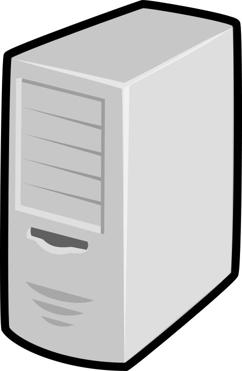
Un servidor és un exemple d’actiu que cal protegir. Imatge de la presentació.
Confidencialitat, integritat i disponibilitat
La seguretat de la informació es basa en tres propietats que es complementen:
Propietat
Què significa?
Exemple
Confidencialitat
Les dades només són accessibles a les persones autoritzades.
Una contrasenya ajuda a restringir l’accés a informació privada.
Integritat
Les dades no pateixen modificacions no autoritzades o accidentals.
Cal impedir que algú modifiqui les notes de l’alumnat sense permís.
Disponibilitat
Els recursos es poden utilitzar quan són necessaris.
Si falla el corrent i el servidor s’atura, la informació pot deixar d’estar disponible.
Exemple · Les notes d’una classe
Confidencialitat: només les persones autoritzades poden consultar les notes.
Integritat: una modificació no autoritzada de les notes comprometria que les dades fossin correctes.
Disponibilitat: una avaria del servidor pot impedir consultar-les quan cal.
Una mateixa incidència pot afectar més d’una propietat.
De què hem de protegir els sistemes?
Cal protegir-los davant d’intrusions i atacs, aprofitament de vulnerabilitats i ús indegut de contrasenyes. Entre els exemples d’atacs hi ha els virus, els cucs i les denegacions de servei, que poden dificultar o impedir l’ús normal d’un recurs.
La protecció davant d’Internet és necessària, però no suficient. Els problemes també poden venir de dins: una persona descontenta, un dispositiu infectat o algú que entra a l’organització sense autorització. Els dispositius mòbils poden introduir riscos quan es connecten a xarxes Wi-Fi públiques, tenen aplicacions malicioses o estan infectats i després es connecten a la xarxa de l’organització.
Per provocar un dany no sempre cal saber informàtica: una persona pot fer malbé físicament un equip o deixar-se enganyar. No tots els danys són intencionats. També hi ha accidents i errors humans. Un tall de corrent, per exemple, pot deixar els equips fora de servei; per això s’ha de protegir físicament el sistema. Les parts que poden resultar afectades inclouen el maquinari, el programari, les dades i les persones que utilitzen els equips.
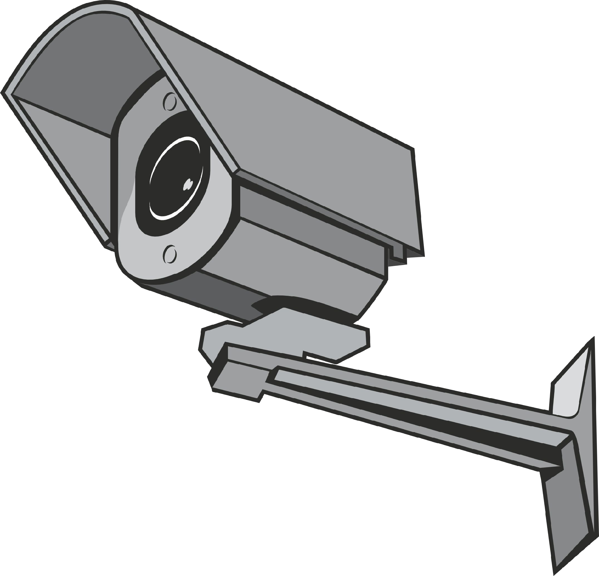
Una càmera és una mesura de detecció física. Imatge de la presentació.
Els exemples següents relacionen els incidents de la presentació amb les propietats de la informació. Les conseqüències concretes poden variar segons l’incident:
Situació
Propietats que pot afectar
Una persona obté una contrasenya i consulta dades privades.
Confidencialitat: les dades arriben a algú no autoritzat.
Un virus o un cuc modifica dades o impedeix fer servir el sistema.
Integritat i/o disponibilitat, segons l’efecte.
Una persona fa malbé un equip, intencionadament o per accident.
Pot afectar la disponibilitat i, si es fan malbé dades, la integritat.
Es talla el corrent i el servidor s’apaga.
Disponibilitat: no podem accedir al servei mentre estigui aturat.
Seguretat física i seguretat lògica
Segons el que protegim, distingim dues classes de seguretat:
La seguretat física protegeix els equips i les instal·lacions. Té en compte, entre altres riscos, els robatoris, els desastres naturals i les fallades de subministrament. Inclou mesures de prevenció i detecció.
La seguretat lògica protegeix les dades, els programes i els accessos als sistemes. S’ocupa de riscos com el programari maliciós, la pèrdua de dades o els atacs als servidors.
També podem classificar les mesures segons la seva funció:
Mesura
Funció
Exemples
Activa
Prevenir o detectar incidents.
Antivirus i tallafoc.
Passiva
Reduir els danys i facilitar la continuïtat o la recuperació.
SAI i còpies de seguretat.
Les dues classificacions es complementen: física o lògica indica què protegim; activa o passiva indica quina funció fa la mesura.
Enginyeria social i formació
En un atac no sempre cal manipular directament un programa: l’enginyeria social consisteix a enganyar una persona perquè faci una acció perjudicial o faciliti informació. Per exemple, algú podria intentar convèncer un usuari que vessar cafè sobre l’ordinador farà que la connexió a Facebook vagi més ràpid. És una afirmació absurda: si l’usuari la creu i ho fa, pot fer malbé l’equip sense que l’atacant necessiti coneixements tècnics avançats.
La formació ajuda a reconèixer aquests enganys, però també cal aplicar mesures tècniques. Per exemple, les contrasenyes curtes o fàcils d’endevinar dificulten menys els accessos no autoritzats que unes credencials robustes i ben protegides.
Existeix la seguretat absoluta?
No podem garantir que un sistema sigui segur al 100 %. El professor Gene Spafford va fer servir una exageració —un equip apagat, desconnectat i protegit dins d’un búnquer— per il·lustrar que fins i tot amb moltes barreres és difícil parlar de seguretat absoluta.
Per això hem de preveure que algun dia es pot produir un incident: la seguretat informàtica intenta prevenir-lo, reduir-ne els danys i preparar la recuperació. Augmentar la protecció té un cost i no totes les organitzacions necessiten les mateixes mesures. L’objectiu és situar el risc en un nivell acceptable per a cada organització.
Legislació i estàndards
El RGPD (Reglament UE 2016/679) és la normativa europea de protecció de dades personals. A Espanya, la LOPDGDD (Llei orgànica 3/2018) el complementa. Les mesures de seguretat s’han d’adaptar als riscos del tractament de les dades. També es relacionen amb aquest àmbit la LSSI-CE, sobre serveis de la societat de la informació i comerç electrònic, i la LPI, sobre propietat intel·lectual i drets d’autor.
Els estàndards i marcs de bones pràctiques ajuden a organitzar la seguretat i els serveis informàtics. La ISO/IEC 27002:2022 ofereix una guia de controls, com el control d’accés, les còpies de seguretat, la protecció física i la gestió d’incidents. La 27002 no és una norma de certificació; la ISO/IEC 27001 sí que és certificable.
ITIL és un marc de bones pràctiques per a la gestió dels serveis de tecnologies de la informació. Ajuda a organitzar, entre altres activitats, la gestió d’incidències i de canvis i la disponibilitat dels serveis.
El pla de contingència
Un pla de contingència defineix què cal fer davant d’un desastre per restaurar el sistema com més aviat millor i amb la mínima pèrdua de dades. Pot preparar l’organització davant d’una fallada de maquinari, un atac informàtic, un incendi o un error humà.
El pla no és només un document: s’ha de preparar, provar, aplicar quan calgui i revisar. Podem organitzar-lo en cinc fases:
Avaluació: analitzar els riscos i identificar els actius crítics.
Planificació: dissenyar el pla i els procediments.
Proves: fer simulacres per comprovar que funciona.
Execució: aplicar el pla quan es produeix l’incident.
Recuperació: restaurar les dades i els serveis i tornar a la normalitat.
Per fer-lo eficaç podem duplicar elements crítics —com servidors o connexions—, distribuir recursos i còpies en llocs diferents, documentar com es recuperen els serveis i formar les persones responsables. El RAID pot aportar redundància, però no substitueix les còpies de seguretat.
Per preparar aquests plans podem consultar la ISO 22301:2019 per a la continuïtat del negoci, la ISO/IEC 27031:2025 per a la continuïtat dels serveis TIC i la guia NIST SP 800-34 Rev. 1 per elaborar i mantenir plans de contingència informàtica. La idea comuna és planificar, provar i revisar la resposta abans que es produeixi una interrupció.
Part II · Criteris 1.c i 1.d · Continguts 1.1 i 1.2
02 · Seguretat física
La seguretat física protegeix els equips, les instal·lacions i les condicions que permeten que els sistemes informàtics funcionin. En aquesta part estudiarem per què és necessària, quines amenaces poden afectar el maquinari i quines condicions ambientals i mesures de protecció cal tenir en compte.
Per què és necessària?
Imaginem que un sistema fos invulnerable als atacs informàtics. Tot i així, una avaria, un robatori, un incendi o un tall elèctric podrien impedir que funcionés. Si falla el maquinari, es pot interrompre el servei i fins i tot es poden perdre dades.
Una avaria afecta especialment la disponibilitat, perquè els usuaris no poden utilitzar el sistema quan el necessiten. També pot comprometre la integritat si es fan malbé o es modifiquen les dades. Per això, protegir els programes i els accessos no és suficient: també hem de protegir físicament el maquinari.
Quines amenaces poden afectar els equips?
Els equips i les dades poden resultar afectats per sabotatges, robatoris, accidents, esborrats de dades o pèrdues. Les causes es poden agrupar en tres grans categories: accions humanes, condicions ambientals i desastres naturals. La calor, la humitat, l’electricitat i el magnetisme són exemples de factors que poden posar en risc els equips.
Accions humanes i formació
Molts incidents no són atacs intencionats, sinó conseqüència d’errors: una instal·lació o configuració incorrecta, no seguir els procediments de seguretat, un oblit o el desconeixement de l’usuari. La formació és essencial per reduir aquests errors.
Exemples · Prevenir accidents
Begudes: no les deixis al costat de l’ordinador; un vessament pot danyar-lo.
Ventilació: no tapis les reixetes; l’equip necessita que l’aire circuli per evitar l’excés de calor.
Control de l’accés i detecció d’intrusions
L’accés físic a un equip facilita molt un possible atac, encara que no sempre permet accedir a les dades. Per això s’ha d’impedir que persones no autoritzades entrin a les zones o accedeixin als sistemes protegits. A més de restringir l’entrada, cal poder detectar intrusos i dissuadir-los.
Segons les necessitats de l’espai, es poden utilitzar identificació de persones, controls d’accés, càmeres, il·luminació, vigilants o gossos de guarda. Les tanques, els obstacles, els llums i els cartells també poden actuar com a mesures dissuasives.
Per detectar situacions de risc es poden instal·lar sensors de moviment i alarmes d’intrusió, així com alarmes de foc, gas o inundació. Un sensor detecta una situació; l’avís permet que el personal responsable la comprovi i actuï.
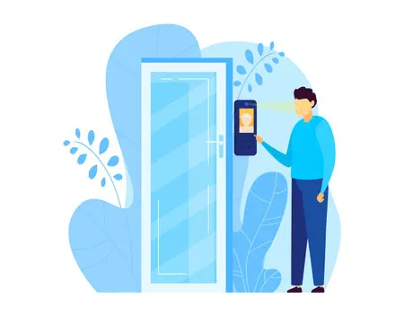
Control d’accés a una zona protegida.
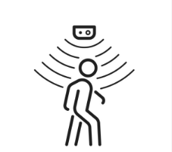
Un sensor de moviment ajuda a detectar intrusions.
On hem d’instal·lar els equips i servidors?
Una bona ubicació física ajuda a prevenir avaries i incidents. Abans d’instal·lar els equips, revisa aquests quatre aspectes:
Aspecte
Què cal tenir en compte?
Ventilació
Evita espais tancats sense circulació d’aire i deixa lliures les reixetes dels equips.
Aigua i humitat
Allunya els equips de possibles fuites i zones amb risc d’inundació.
Accés físic
Restringeix l’entrada a les zones on hi ha equips crítics.
Temperatura
Evita les fonts de calor i facilita la refrigeració.
Condicions ambientals
Els valors extrems de temperatura, humitat i pols augmenten el risc d’errors i avaries dels components. Per això és important escollir una ubicació adequada i mantenir les condicions recomanades pels fabricants dels equips.
Temperatura i calor
Els canvis de temperatura provoquen dilatacions i contraccions dels materials. La calor excessiva pot reduir el rendiment i malmetre els equips. Les conseqüències depenen del component:
Component
Conseqüències possibles de l’excés de calor
Processador
Reducció del rendiment o apagada de protecció.
Discos HDD i SSD
Errors de funcionament o possibles avaries.
Servidors i altres equips
Fallades i interrupcions del servei.
Humitat i pols
Tant l’excés com la falta d’humitat poden ser perjudicials. La humitat alta pot afavorir la corrosió i els curtcircuits. La humitat baixa pot afavorir les descàrregues electroestàtiques, capaces de danyar components.
La pols també pot dificultar el funcionament correcte dels sistemes i arribar a malmetre components. La climatització i la ventilació ajuden a mantenir unes condicions adequades: regulen la temperatura, ajuden a controlar la humitat i, amb els filtres adequats, retenen part de la pols.
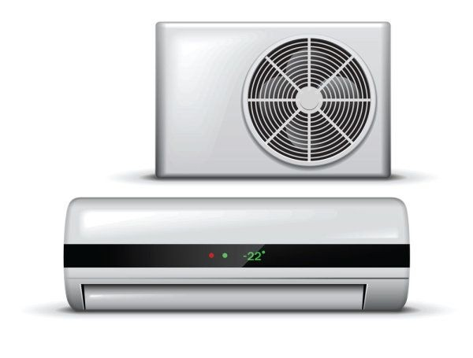
La climatització ajuda a controlar l’entorn físic.
Protecció davant d’incendis
El foc és un dels desastres que poden causar més danys: posa en perill les persones, pot destruir equips i dades i pot aturar l’activitat de l’empresa. A més de les flames, la calor, el fum i els residus, com la cendra, poden danyar els equips.
La protecció combina la detecció de l’incendi amb els sistemes que permeten extingir-lo:
Funció
Exemples de la presentació
Detectar
Detectors de fum, de flames i de calor.
Extingir
Ruixadors automàtics, extintors i sistemes d’extinció per gas.
La instal·lació i l’ús d’aquests sistemes han de ser adequats a l’espai i a la seguretat de les persones.
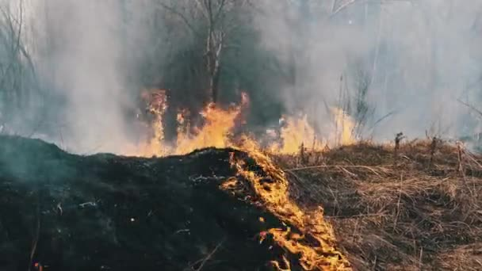
El foc, la calor i el fum poden afectar els equips i interrompre el servei. Imatge de la presentació.
Continuïtat de les comunicacions i l’alimentació
En algunes empreses, un tall de comunicacions pot impedir que es continuï treballant. Una possible mesura és la redundància: disposar d’un sistema de reserva perquè, si un falla, l’altre pugui mantenir el servei.
Els sistemes informàtics també depenen de l’electricitat. Aquests són els problemes principals del subministrament:
Problema
Què passa?
Tall de subministrament
Deixa d’arribar corrent als equips.
Sobretensió
La tensió puja per sobre del valor normal.
Baixada de tensió
La tensió baixa per sota del valor normal.
Microtall
El subministrament s’interromp durant un temps molt breu.
Per millorar la continuïtat es poden utilitzar generadors, línies elèctriques de reserva i sistemes d’alimentació ininterrompuda, anomenats SAI o UPS. A la Part III estudiarem com funciona i com se selecciona un SAI.
Part III · Criteris 1.d, 1.e i 1.f · Continguts 1.2–1.4
03 · Sistemes d’alimentació ininterrompuda
Els sistemes informàtics depenen de l’electricitat. Un tall de subministrament, una pujada o baixada de tensió o un microtall poden interrompre el funcionament dels equips. En aquesta lliçó veurem per què es fa servir un SAI, quins tipus hi ha i com triar-ne un segons la càrrega i l’autonomia necessàries.
Què és un SAI i com funciona?
Un sistema d’alimentació ininterrompuda o SAI —en anglès, UPS— proporciona energia als equips connectats durant un temps quan falla el subministrament. Segons el model, també pot regular o condicionar l’alimentació. Serveix per mantenir el servei durant talls breus o per guardar la feina i apagar els sistemes de manera ordenada. Altres mesures de continuïtat són els generadors i les línies elèctriques de reserva.
La xarxa subministra corrent altern (CA). El carregador o rectificador el transforma en corrent continu (CC) per mantenir carregada la bateria, que emmagatzema energia química. Quan cal alimentar els equips des de la bateria, l’inversor transforma el corrent continu en altern. Com a exemple, la presentació mostra una xarxa de 230 V CA, una bateria de 12 V CC i una sortida de 230 V CA per als equips.
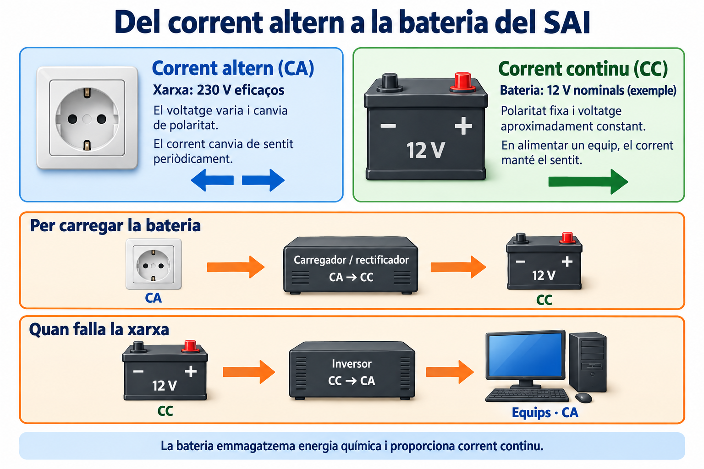
Del corrent altern a la bateria i de la bateria als equips. Imatge de la presentació.
Tipus de SAI
Tipus
Funcionament
Característica
Offline o standby
Normalment alimenta els equips des de la xarxa; quan hi ha un tall, commuta a la bateria.
És el més senzill; el canvi necessita uns mil·lisegons.
Line-interactive o interactiu
Afegeix regulació automàtica de tensió, o AVR, per corregir variacions moderades sense passar a bateria.
Quan la xarxa falla, commuta a bateria en uns mil·lisegons.
Online de doble conversió
Transforma contínuament CA en CC i de nou en CA; l’inversor alimenta la sortida durant el funcionament normal.
En doble conversió no necessita commutar la sortida en passar a bateria. Els modes bypass o ECO s’han d’interpretar segons el model.
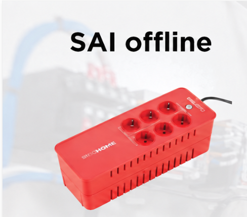
Offline o standby.
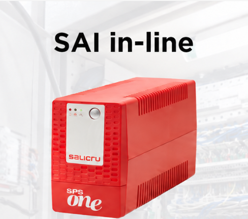
Line-interactive.Online de doble conversió.
El tipus de SAI descriu com funciona, però no determina per si sol quants minuts durarà: l’autonomia depèn de la bateria, la càrrega i les condicions de treball.
Càrrega, capacitat i autonomia
La càrrega és el conjunt d’equips connectats i el seu consum. La capacitat és la potència màxima que el SAI pot subministrar; s’indica en watts i voltampers. L’autonomia és el temps que pot alimentar aquella càrrega amb la bateria.
Unitat
Què indica?
Per a què serveix?
W · watt
Potència activa o real.
Comparar el consum dels equips amb el límit de W del SAI.
VA · voltamper
Potència aparent.
Comprovar també el límit de VA del SAI.
V · volt
Tensió de la bateria.
Una bateria de l’exemple és de 12 V.
Ah · amper hora
Capacitat elèctrica de la bateria.
Juntament amb la tensió, permet estimar-ne l’energia.
Wh · watt hora
Energia de la bateria.
Permet estimar l’autonomia amb el consum i un factor útil.
Per triar la potència cal comprovar W i VA. Per estimar l’autonomia es treballa amb les dades de les bateries, l’energia útil i el consum real. La bateria es degrada amb el temps, i això pot reduir-ne la durada.
Potència i factor de potència
Els W expressen la potència activa que necessiten els equips; els VA expressen la potència aparent. El factor de potència o FP relaciona les dues magnituds:
W = VA × FP · VA = W ÷ FP
Exemple · De VA a W
Un ordinador té una potència aparent de 300 VA i un factor de potència de 0,98.
Formula: W = VA × FP.
Substitueix les dades: 300 × 0,98.
Resultat: 294 W.
Un SAI pot anunciar-se com 700 VA / 330 W: s’han de respectar tots dos límits, perquè els VA per si sols no indiquen quants watts pot entregar.
Dos models de 1.000 VA també poden tenir límits diferents: amb una relació de 0,6 el primer admet 600 W, i amb una relació de 0,9 el segon admet 900 W. Disposar de més W amb els mateixos VA no significa necessàriament que el SAI tingui més autonomia o millor rendiment energètic.
Energia de les bateries i eficiència
Per a bateries iguals, un càlcul simplificat de l’energia teòrica és:
Energia teòrica (Wh) = nombre de bateries N × tensió V × capacitat Ah
Una part de l’energia es perd durant la conversió, entre altres causes en forma de calor. En els exercicis podem aplicar un factor d’energia aprofitable si l’enunciat el proporciona:
Energia útil estimada (Wh) = energia teòrica × factor útil
Per exemple, si suposem un 90 %, 100 Wh × 0,90 = 90 Wh útils. En aquest exemple simplificat, els 10 Wh restants corresponen a pèrdues. Els 90 % o 95 % dels exemples són hipòtesis de càlcul, no valors universals. En un cas real cal consultar les dades del fabricant.
Exemple: dues bateries de 12 V i 7 Ah
Un SAI de 1.000 VA / 600 W té dues bateries iguals de 12 V i 7 Ah de plom, connectades en sèrie. Suposem un factor d’energia aprofitable del 95 %.
Pas 1 · Calcular la tensió total
Com que les dues bateries estan connectades en sèrie, sumem les tensions:
2 × 12 V = 24 V
Pas 2 · Calcular l’energia teòrica
Multipliquem la tensió total per la capacitat de la bateria:
24 V × 7 Ah = 168 Wh teòrics
També ho podem calcular així: 2 bateries × 12 V × 7 Ah = 168 Wh.
Pas 3 · Aplicar el factor aprofitable
Una part de l’energia es perd durant la conversió. Si suposem que podem aprofitar-ne el 95 %, multipliquem per 0,95:
168 Wh × 0,95 = 159,6 Wh útils estimats
Resultat: el SAI té 168 Wh teòrics i, amb la hipòtesi del 95 %, 159,6 Wh útils estimats. El 95 % és un factor d’energia aprofitable; no és el marge de potència que afegim quan seleccionem el SAI.
Autonomia: de què depèn i com s’estima?
L’autonomia és el temps que el SAI manté els equips en marxa durant un tall. Alguns equips ofereixen uns 5–10 minuts per superar talls breus i apagar-se; sistemes de continuïtat poden disposar de 30 minuts o més, segons el disseny. En instal·lacions crítiques, el SAI pot mantenir el servei mentre arrenca un generador.
No és un valor fix. Si augmenta el consum, l’autonomia acostuma a disminuir. També hi influeixen l’energia i l’antiguitat de la bateria i les pèrdues del sistema. En un exercici simplificat:
Autonomia estimada (min) = energia útil (Wh) ÷ consum real (W) × 60
Amb els 159,6 Wh útils de l’exemple i una càrrega real de 350 W, l’estimació és (159,6 ÷ 350) × 60 = 27,4 minuts. És una aproximació teòrica: l’autonomia real s’ha de confirmar amb la corba o la fitxa del fabricant. Per calcular-la fem servir els 350 W reals, no la potència amb marge usada per escollir el SAI.
Si mantenim els mateixos 159,6 Wh estimats, observem com varia el resultat en canviar el consum:
Consum
Autonomia teòrica
100 W
95,76 min
300 W
31,92 min
500 W
19,15 min
600 W
15,96 min
Exemple: estimar el factor aprofitable a partir de la fitxa
Dades: SAI de 1.350 VA / 810 W, dues bateries de 12 V i 9 Ah, i 10 minuts d’autonomia al 75 % de càrrega. Volem estimar el factor global d’energia aprofitable η a aquesta càrrega.
Pas 1 · Energia teòrica de les bateries
2 × 12 V × 9 Ah = 216 Wh
Pas 2 · Expressar l’energia útil
Com que encara no coneixem el factor η, deixem indicada la multiplicació:
Energia útil = 216 × η Wh
Pas 3 · Escriure la fórmula de l’autonomia
Autonomia (min) = energia útil (Wh) ÷ consum (W) × 60
Pas 4 · Calcular el consum al 75 %
810 W × 0,75 = 607,5 W
Pas 5 · Substituir les dades
La fitxa dona 10 minuts per aquesta càrrega:
10 = (216 × η ÷ 607,5) × 60
Pas 6 · Simplificar
10 = (12.960 × η) ÷ 607,5 ≈ 21,33 × η
Pas 7 · Aïllar η
η ≈ 10 ÷ 21,33 ≈ 0,469 ≈ 47 %
El resultat és aproximadament el 47 % d’energia aprofitable en aquest punt. És un factor global estimat per a aquest model i aquesta càrrega, no necessàriament el rendiment de l’inversor per separat.
Com varia el rendiment amb la càrrega?
Un SAI també consumeix energia per alimentar els seus circuits, indicadors i, segons el model, ventiladors. Quan la càrrega és molt petita, aquest consum intern pot representar una proporció important. Per exemple, un router de 15 W connectat a un SAI de 1.000 W utilitza una part molt petita de la seva capacitat.
El rendiment pot millorar amb càrregues intermèdies; a plena càrrega l’autonomia disminueix i augmenta l’exigència sobre els components. La forma de la corba i els percentatges depenen del model: no hi ha una franja o un percentatge universal, i cal consultar la fitxa tècnica.
Com triem un SAI?
Primer identifiquem els equips essencials i sumem el seu consum. Després afegim el marge acordat i comprovem que el SAI compleixi tant els W com els VA. Finalment, verifiquem a la fitxa els minuts disponibles a la càrrega real, les connexions i l’apagada segura.
També cal considerar l’espai disponible, el format de torre o rack, la tecnologia offline, interactiva o online i la possibilitat de supervisió. Un port USB o RS-232 permet comunicar el SAI amb un ordinador o un NAS; programes com NUT o PowerChute poden gestionar l’apagada. En entorns de xarxa es pot utilitzar una targeta SNMP per supervisar-lo a distància.
Què pot fer el programari de gestió?
Funció
Utilitat
Apagada automàtica
Pot tancar ordenadament el sistema abans que s’esgoti la bateria, per reduir el risc de pèrdua de dades.
Supervisió
Permet consultar, segons l’equip, el percentatge de càrrega, la tensió d’entrada i sortida i l’estat de la bateria.
Alertes
Pot avisar el personal responsable d’un tall elèctric, per exemple mitjançant correu, SNMP o SMS si el sistema ho permet.
Les funcions disponibles depenen del SAI, del programari i de la configuració. NUT i PowerChute són dos exemples de programari de gestió.
Preses i forma d’ona
Les preses Schuko són les habituals dels endolls domèstics; les IEC C13/C14 són habituals en equips professionals i requereixen cables compatibles. No totes les sortides del SAI fan el mateix: les preses amb bateria continuen alimentant la càrrega durant un tall; les que només protegeixen contra sobretensions no proporcionen autonomia. Cal comptar quantes preses de cada tipus té el model.
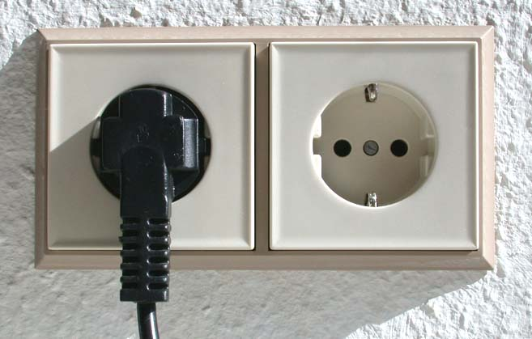
Presa Schuko.
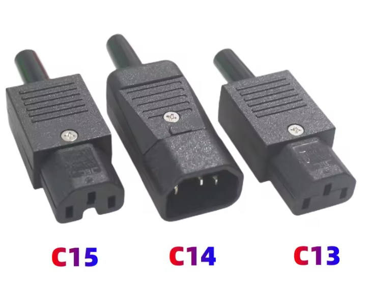
Exemples de connectors IEC.
Una sortida d’ona sinusoïdal pura ofereix més compatibilitat amb equips sensibles i fonts amb PFC actiu. Una ona simulada acostuma a ser més econòmica i pot funcionar amb molts equips, però cal comprovar-ne la compatibilitat. La presentació mostra com a exemple el CyberPower BR700ELCD de 420 W, amb preses de bateria i preses només de protecció contra sobretensions.
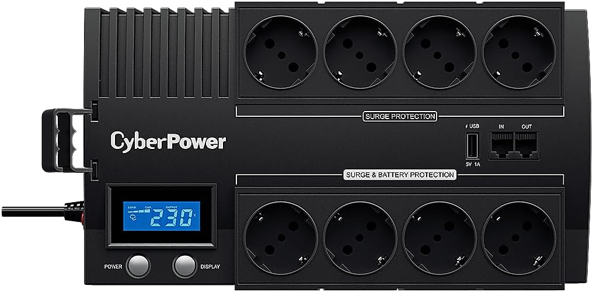
Consulta quines preses tenen bateria.
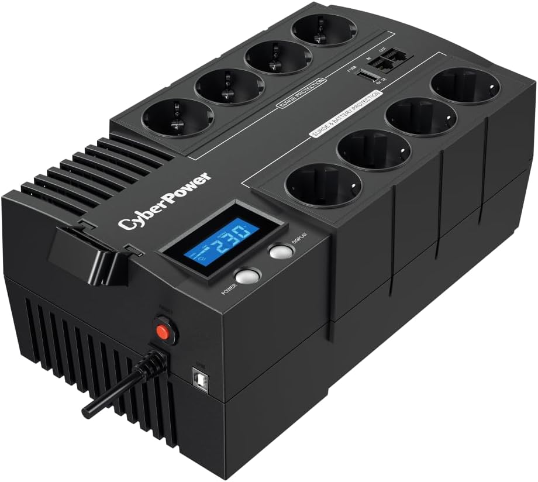
No totes les preses donen autonomia.
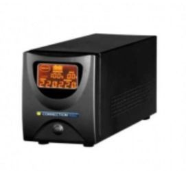
SAI utilitzat com a referència en l’exemple de dimensionament.
Exemple complet: dimensionament d’un lloc de treball
Volem alimentar un ordinador, un monitor i un router. Utilitzem les dades de consum dels equips i les comprovem a la fitxa corresponent a la seva marca i model.
Equip
Consum de l’exemple
Ordinador
300 W
Monitor
40 W
Router
10 W
Total
350 W
L’exercici proposa un marge del 25 % i un FP de 0,7. El marge deixa reserva per a possibles canvis d’equips o variacions de consum.
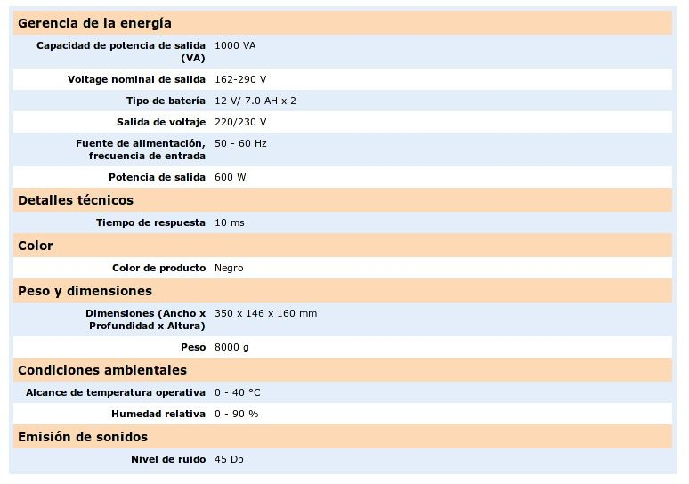
Fitxa original de la presentació. Les dades necessàries es desenvolupen al text.
El SAI de la fitxa de l’exemple té una potència màxima de 1.000 VA / 600 W i dues bateries de 12 V / 7 Ah. El factor del 95 % és una hipòtesi afegida per a l’exercici: la fitxa no el proporciona.
Pas 1 · Sumar el consum real
300 W + 40 W + 10 W = 350 W
Pas 2 · Afegir el marge de potència
350 W × 1,25 = 437,5 W
Escollim un SAI que admeti almenys 438 W.
Pas 3 · Calcular la potència aparent
437,5 W ÷ 0,7 = 625 VA
Pas 4 · Estimar l’autonomia
Amb dues bateries de 12 V / 7 Ah i el factor útil hipotètic del 95 %, hem calculat 159,6 Wh. Per a l’autonomia utilitzem els 350 W reals:
(159,6 Wh ÷ 350 W) × 60 = 27,4 minuts estimats
El 95 % és una hipòtesi de l’exercici; consulta la corba del fabricant per a un model real.
Comparem els límits de tres models ficticis:
Model
Potència
Compleix la potència?
A
650 VA / 400 W
No: falten W.
B
650 VA / 500 W
Sí.
C
1.000 VA / 600 W
Sí.
B i C compleixen els dos límits de potència; encara cal confirmar l’autonomia a 350 W i les preses necessàries. Si l’autonomia no arriba al temps que necessitem, podem buscar un SAI amb més bateria o connectar-hi menys equips.
Potència
Per a què la fem servir?
350 W de consum real
Per estimar l’autonomia dels equips connectats.
437,5 W amb marge, arrodonits a 438 W
Per escollir la potència mínima del SAI.
600 W màxims del SAI de l’exemple
Per calcular l’autonomia només si la càrrega real fos de 600 W.
En seleccionar el SAI revisem el cas en què tots els equips essencials funcionen alhora.
Exemple complementari · NAS, router i switch
Situació: sis persones treballen amb portàtils i comparteixen fitxers en un NAS. El NAS és un petit servidor d’emmagatzematge connectat a la xarxa. El switch uneix els equips per cable; el router connecta xarxes i proporciona accés a Internet.
Connexió de dades: el SAI ha d’alimentar els equips necessaris per al servei
Equip real de referència
Característiques i dada disponible
Com interpretem la dada
Synology DS223j
2 badies, 1 port Gigabit. 16,31 W en accés i 4 W en hibernació, segons les condicions de prova del fabricant.
El consum varia amb discs i activitat. La font de 60 W no significa un consum constant de 60 W.
TP-Link Archer AX55
Router Wi-Fi 6. Adaptador de 12 V i 2 A.
12 × 2 = 24 W és la capacitat de sortida de l’adaptador, no una mesura del consum de xarxa.
TP-Link TL-SG108
Switch de 8 ports Gigabit. La fitxa espanyola consultada indica 2,77 W màxim a 220 V / 50 Hz.
Cal comprovar la revisió exacta del model; altres versions poden tenir dades diferents.
Decidim què protegim. NAS, switch i router. Els portàtils utilitzen la seva bateria. Si hi ha una ONT separada (l’equip que termina la fibra), caldrà incloure-la per mantenir la connexió a Internet, i l’operador també haurà de continuar funcionant.
Obtenim el consum. En una instal·lació real mesurem W i VA amb un instrument adequat. Per practicar utilitzem dades simulades, no mesures dels models anteriors: NAS 22 W, router 12 W i switch 3 W. Total: 37 W.
Passem a VA. Donem un FP agregat de 0,65 com a hipòtesi de l’exercici: S = 37 / 0,65 = 56,9 VA.
Deixem marge. Si volem el 30% de capacitat lliure, ocuparem com a màxim el 70%: mínim 37 / 0,70 = 52,9 W i 56,9 / 0,70 = 81,3 VA. Aquest marge és una decisió del cas.
Comprovem autonomia. Un SAI fictici de 650 VA / 360 W supera tots dos mínims. Però no podem afirmar que duri 8 minuts: cal consultar la seva corba d’autonomia a 37 W o verificar-ho. W i VA no són minuts.
Calculadora de potència
La calculadora següent estima els límits de W i VA necessaris segons la capacitat lliure que volem deixar. Per exemple, deixar el 30 % lliure vol dir utilitzar com a màxim el 70 % de la capacitat; és un criteri diferent d’afegir un 30 % al consum.
La calculadora no estima minuts: cal verificar l’autonomia del model a la càrrega real.
Exercicis i recursos
La presentació proposa calcular l’autonomia d’una bateria de 12 V / 9 Ah amb 500 W, dimensionar un altre lloc de treball i comparar tres SAI reals. Tens els enunciats i les solucions a Exercicis resolts de SAI. En comparar models, cal revisar potència en W i VA, minuts a la càrrega real, tipus i nombre de preses amb bateria, preu i font de les dades.
Com a punt de partida per a la comparació, aquests són els tres models de referència de l’exercici:
Model
Característiques indicades a la presentació
APC Back-UPS Pro BR1500G-GR
Line-interactive; 3 preses amb bateria.
CyberPower CP1500EPFCLCD
Line-interactive; ona sinusoïdal pura i 6 preses Schuko amb bateria.
Eaton 5P1150IG2
Line-interactive; 8 preses IEC C13. Poden caldre cables adequats per connectar equips amb endoll Schuko.
Són referències orientatives de la presentació: abans de decidir, comprova les característiques i l’autonomia a 350 W a la fitxa del fabricant. Les potències en W i VA, per si soles, no demostren que s’assoleixin els 10 minuts demanats.
Vídeos: com funciona un SAI
Mira aquests vídeos per repassar el funcionament d’un SAI i els seus components.
Part IV · Criteris 1.h i 1.i · Continguts 1.6 i 1.7
04 · Contrasenyes, biometria i autenticació
Per accedir a un sistema cal identificar-se, demostrar la identitat i tenir permís per utilitzar el recurs. En aquesta lliçó aprendràs a protegir les contrasenyes, conèixer els sistemes biomètrics i distingir autenticació i autorització.
Contrasenyes i política de contrasenyes
Una contrasenya és un conjunt de caràcters secrets que serveix per verificar la identitat de l’usuari. Una política de contrasenyes estableix les normes per crear-les, utilitzar-les, protegir-les i canviar-les quan calgui. Una contrasenya robusta deixa de ser segura si la compartim o la deixem a la vista.
Deixar una contrasenya a la vista facilita que altres persones la coneguin.
Com reconèixer una contrasenya feble?
Aspecte
Opció feble
Opció més robusta
Longitud
Massa curta.
Llarga: millor 15 caràcters o més.
Contingut
Una paraula habitual o un nom conegut.
Una frase llarga o diverses paraules sense relació.
Dades personals
Nom d’una mascota, data de naixement o adreça.
Evitar dades que altres persones puguin descobrir.
Patrons
123456, qwerty o canvis previsibles com a → @.
Evitar seqüències i substitucions fàcils d’endevinar.
Reutilització
La mateixa clau per a diversos serveis.
Una contrasenya diferent per a cada servei.
Protecció
Una nota visible o un fitxer sense protegir.
Un gestor de contrasenyes i, quan sigui possible, verificació en dos passos.
Una contrasenya curta ofereix menys combinacions possibles. Els atacants també proven diccionaris, noms i patrons coneguts com aaabbb o Contrasenya1!; substituir sempre la «a» per «@» o la «o» per «0» és previsible. Les dades personals, com el nom d’una mascota o un equip de futbol, poden ser fàcils de trobar. Si es reutilitza una clau filtrada, algú pot provar-la en altres serveis.
Com a referència, la guia NIST SP 800-63B-4 de 2025 estableix un mínim de 15 caràcters quan la contrasenya és l’únic factor; quan forma part d’autenticació multifactor, permet un mínim de 8. No recomana imposar regles de composició ni canvis periòdics sense motiu. És una referència tècnica; cal seguir també la política del sistema que utilitzem.
Exemple: crear una frase llarga
Tria diverses paraules sense relació: «Núvol Pedra Violí Tren».
Combina-les en una frase llarga: NúvolPedraViolíTren.
Si vols, afegeix separadors i números: Núvol-Pedra-Violí-Tren-52.
Comprova la longitud: aquest exemple té 25 caràcters.
És només un exemple públic: no el facis servir com a contrasenya real. Crea una frase pròpia i diferent per a cada servei.
Protegir les contrasenyes i detectar filtracions
No les comparteixis ni les donis per telèfon; tampoc les escriguis en correus o formularis sospitosos, ni donis pistes o en parlis davant d’altres persones. Un atacant podria fer-se passar per administrador i demanar-te la contrasenya: és un exemple d’enginyeria social. Canvia una clau quan sospitis que s’ha compromès o hi hagi un motiu justificat.
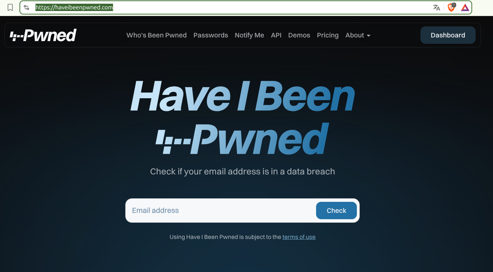
Consulta si una adreça apareix en filtracions conegudes.
Amb Have I Been Pwned pots comprovar si una adreça apareix en filtracions conegudes. «Pwned» vol dir compromès: aparèixer en una filtració no significa que el compte estigui sent atacat en aquell moment.
Exemple · Un correu apareix en dues filtracions
Imagina que alumne.exemple@example.com apareix en les filtracions d’una botiga i d’una xarxa social antiga.
Revisa quines dades s’han exposat.
Canvia la contrasenya dels serveis afectats.
Si la reutilitzaves, canvia-la també als altres serveis.
Activa la verificació en dos passos i revisa l’activitat del compte.
A classe fem servir dades i contrasenyes inventades.
El servei també ofereix Pwned Passwords, que permet comprovar si una contrasenya apareix en filtracions conegudes. Per practicar a classe utilitza només contrasenyes inventades: 123456, per exemple, és una clau feble que ha aparegut moltes vegades en filtracions. Una frase llarga i única, guardada en un gestor, és una opció millor. Una filtració no és necessàriament culpa de l’usuari, però reutilitzar la mateixa contrasenya augmenta el risc.
Gestors de contrasenyes
Un gestor guarda les contrasenyes en un magatzem xifrat, que desbloquegem amb una contrasenya mestra. Pot generar claus llargues, emplenar formularis i, segons l’eina, sincronitzar el magatzem o avisar de claus repetides o filtrades.
La contrasenya mestra és un punt crític: ha de ser robusta. Activa l’autenticació multifactor al gestor i conserva una còpia o exportació de manera segura. Alguns gestors també permeten compartir accessos sense revelar directament la contrasenya, segons les funcions i la configuració de l’eina. Pots veure aquest vídeo sobre Bitwarden per entendre com funciona un gestor.
La biometria verifica la identitat mitjançant característiques físiques o patrons de comportament. Primer es registra una mostra de referència; després el sistema compara una nova mostra amb aquella referència. Pot facilitar l’accés o complementar altres factors.
Tipus
Què analitza?
Empremta dactilar
El relleu dels dits.
Palmell
La forma, les línies o els patrons de les venes.
Retina
El patró dels vasos sanguinis.
Iris
Els patrons de la part acolorida de l’ull.
Rostre
Característiques i distàncies de la cara.
Comportament
La manera d’escriure, utilitzar el ratolí o caminar; pot canviar amb el temps i pot ser imitada.
Empremta
Palmell
Retina
Iris
Rostre
Errors biomètrics
Error
Què passa?
Exemple
Fals positiu
El sistema accepta una persona no autoritzada. La taxa és la FAR.
Un reconeixement facial accepta un impostor.
Fals negatiu
El sistema rebutja una persona autoritzada. La taxa és la FRR.
El lector no reconeix el propietari perquè té el dit mullat o el sensor és brut.
La FAR és la proporció d’intents d’impostors que el sistema accepta incorrectament. La FRR és la proporció d’intents de persones legítimes que el sistema rebutja incorrectament. Un fals acceptament pot permetre un accés indegut, mentre que un fals rebuig pot impedir l’accés a qui sí que està autoritzat.
El sistema compara la mostra amb un llindar de similitud: fer-lo més estricte sol reduir falsos acceptaments, però pot augmentar els falsos rebutjos. La llum, l’angle i la qualitat del sensor també influeixen. Alguns sistemes poden funcionar pitjor en determinats grups de població, per exemple si s’han entrenat amb dades poc diverses. En una verificació 1:1 es compara amb una referència concreta; en una identificació 1:N es busca entre moltes persones i hi ha més oportunitats de coincidències falses.
Identificació, autenticació i autorització
Quan vols accedir a un recurs, el sistema ha de saber qui ets, comprovar-ho i decidir què pots fer. Aquestes tres fases són diferents:
1 · Identificació Dius qui ets: nom d’usuari o número de compte.
2 · Autenticació Demostres la identitat: contrasenya, biometria o una altra prova.
3 · Autorització El sistema comprova què pots fer sobre el recurs.
Per exemple, Joan entra amb el seu compte i supera l’autenticació. Quan intenta obrir un fitxer, el sistema comprova si té permís: si està autoritzat el pot obrir; si no, rep un error d’accés.
Cada usuari ha de tenir un identificador únic. És preferible evitar noms que revelin funcions sensibles, com admin, i gestionar les altes, modificacions i baixes dels comptes. Una convenció possible és nom i primer cognom separats per un punt, sense accents ni caràcters especials; si hi ha coincidències, cal diferenciar els identificadors.
Els tres factors d’autenticació
Factor
Exemples
Limitació
Una cosa que saps
Contrasenya o PIN.
Algú la pot descobrir.
Una cosa que tens
Targeta, clau o dispositiu.
Es pot perdre o robar.
Una cosa que ets o fas
Empremta, retina, veu o comportament.
El sistema pot cometre errors.
L’autenticació multifactor combina factors de categories diferents, com una contrasenya i una targeta. Una contrasenya i un PIN són dos secrets del mateix tipus: no constitueixen dos factors diferents.
Criteris d’accés, grups i rols
L’accés pot dependre del rol, el grup, la ubicació o l’adreça IP, l’hora o el tipus d’operació. Per exemple, un usuari pot estar autoritzat a consultar un saldo però no a fer una transferència.
Concepte
Significat
Exemple
Grup
Agrupa usuaris amb una característica comuna.
Professorat o alumnat.
Rol
Funció amb un conjunt de permisos associats.
Auditor, editor o administrador.
Permís
Acció concreta sobre un recurs.
Llegir, escriure, executar o eliminar.
Un auditor pot llegir registres sense modificar-los; un administrador pot gestionar usuaris i configuracions. Si l’Anna té el rol de professorat, pot rebre els permisos de llegir, crear i editar materials. Els rols ajuden a gestionar permisos per funció: quan una persona canvia de tasca, es pot revisar i canviar el rol assignat. Una persona pot ser editora en una carpeta i lectora en una altra.
Les icones del diagrama s’han extret de la presentació de la Part IV.
Part V · Contingut 1.8 · Permisos i drets d’usuaris
05 · Permisos a Linux i Windows
Els permisos determinen qui pot llegir, modificar o executar un fitxer, i qui pot entrar o treballar dins d’una carpeta. En aquesta lliçó aprendràs a interpretar i modificar els permisos bàsics de Linux i a consultar els permisos NTFS de Windows.
Abans de començar: usuaris, grups i carpetes
Un usuari és el compte amb què entres al sistema. Un grup reuneix usuaris que poden compartir permisos o una funció, com ara alumnat o professorat. A Linux cada usuari sol disposar d’una carpeta personal, per exemple /home/alumne; a Windows trobaríem una ruta semblant a C:\Users\alumne.
Pots treballar fora de la teva carpeta personal si tens els permisos necessaris. Abans de canviar permisos, comprova amb quin usuari treballes, on ets i quin fitxer o directori vols modificar.
Orientar-se a Linux
Ordre
Què fa?
Exemple
pwd
Mostra el directori actual.
pwd → /home/alumne
ls
Llista el contingut.
ls
cd
Canvia de directori.
cd Descarregues
cd ..
Puja un nivell.
De Descarregues a alumne.
mkdir
Crea un directori.
mkdir proves
touch
Crea un fitxer buit si no existeix.
touch hola.txt
Exemple · Entrar a Descarregues i tornar enrere
Ets a /home. Amb pwd ho pots comprovar.
Executa cd alumne/Descarregues: ara ets a /home/alumne/Descarregues.
Executa cd ..: puges un nivell i tornes a /home/alumne.
$ pwd
/home
$ cd alumne/Descarregues
$ pwd
/home/alumne/Descarregues
$ cd ..
$ pwd
/home/alumne
Per practicar la creació d’una carpeta i un fitxer buit dins d’ella, pots escriure:
$ mkdir proves
$ cd proves
$ touch hola.txt
$ ls
Una ruta absoluta comença a l’arrel, com /home/alumne/Descarregues. Una ruta relativa depèn de la carpeta actual: si ja ets a /home/alumne, n’hi ha prou amb cd Descarregues. També pots treballar gràficament; si Nautilus està instal·lat, nautilus . obre la carpeta actual a l’explorador.
Els permisos bàsics de Linux
Linux diferencia tres categories: propietari (u), grup propietari (g) i altres usuaris (o). Cada bloc pot tenir lectura (r), escriptura (w) i execució (x).
u · Propietari Permisos de la persona propietària.
g · Grup Permisos del grup propietari.
o · Altres Permisos de la resta d’usuaris.
Quan un procés crea un fitxer, normalment el propietari és l’usuari que l’executa i el grup és el grup efectiu del procés. La umask influeix en els permisos inicials; una ACL per defecte o el directori pare poden modificar el resultat habitual.
El significat de r, w i x
Permís
Sobre un fitxer
Sobre un directori
r · lectura
Llegir-ne el contingut.
Llistar-ne els noms.
w · escriptura
Modificar-ne el contingut.
Modificar les entrades, com crear o canviar noms.
x · execució
Executar-lo com a programa o script.
Entrar-hi o travessar-lo per accedir als elements.
Per crear, canviar de nom o eliminar entrades dins d’un directori normalment calen w i x sobre aquell directori. Per tant, esborrar un fitxer depèn principalment dels permisos del directori que el conté, no només dels permisos del fitxer; també poden existir restriccions addicionals.
Com llegir ls -l i id
$ ls -l
-rw-r--r-- 1 eduard eduard 177 Apr 13 13:52 document.txt
El primer caràcter indica el tipus: - és un fitxer, d un directori i l un enllaç. Després hi ha tres blocs de tres caràcters: rw- per al propietari, r-- per al grup i r-- per als altres. En aquest exemple, el propietari pot llegir i escriure; el grup i els altres només poden llegir.
Lectura de drwxrwxrwx: primer el tipus i després els tres blocs de permisos.
La resta de la línia mostra el nombre d’enllaços, el propietari, el grup, la mida en bytes, la data de modificació i el nom. Un signe + al final dels permisos pot indicar ACL addicionals, que es consulten amb getfacl.
$ id
uid=1000(archie) gid=1000(web) groups=1000(web),4(adm),20(dialout)
id mostra el UID de l’usuari, el GID del grup primari i els grups primari i secundaris. Un fitxer té un propietari i un grup propietari; els permisos tradicionals no permeten donar excepcions diferents a diversos usuaris o grups. Per a això es poden utilitzar ACL, que estudiaràs a la Part VI.
Canviar permisos amb chmod
Els grups secundaris permeten accedir a recursos compartits quan els permisos ho permeten. Per exemple, en alguns sistemes pertànyer al grup sudo permet utilitzar aquesta ordre, sempre que la configuració ho autoritzi. El grup efectiu del procés sol coincidir amb el grup primari, però la configuració del directori pot afectar el grup d’un fitxer nou.
Mètode numèric o octal
Cada permís té un valor: r = 4, w = 2 i x = 1. Se sumen els valors de cada bloc. Per exemple, rwx = 4 + 2 + 1 = 7; r-x = 4 + 1 = 5; i r-- = 4. En binari, cada posició és un bit: 1 indica que el permís està activat i 0 que no ho està.
Valor
Permisos
Valor
Permisos
0
---
4
r--
1
--x
5
r-x
2
-w-
6
rw-
3
-wx
7
rwx
Cada bloc de tres permisos també es pot llegir en binari. La posició val 1 si el permís està activat i 0 si està desactivat:
Permís
Bits
Càlcul
Valor octal
rwx
111
4 + 2 + 1
7
rw-
110
4 + 2 + 0
6
r-x
101
4 + 0 + 1
5
r--
100
4 + 0 + 0
4
Exemple · Interpretar chmod 754
Les tres xifres corresponen, en ordre, al propietari, al grup i als altres:
7 = 4 + 2 + 1 → rwx per al propietari.
5 = 4 + 1 → r-x per al grup.
4 = 4 → r-- per als altres.
$ chmod 754 fitxer
Ordre
Resultat
Interpretació
chmod 755 script.sh
rwxr-xr-x
Tothom el pot executar; només el propietari hi té escriptura.
chmod 644 document.txt
rw-r--r--
Tothom pot llegir; només el propietari pot escriure.
chmod 600 arxiu_private.key
rw-------
Lectura i escriptura només per al propietari.
chmod 755 carpeta canvia la carpeta indicada. Amb chmod -R 755 carpeta el canvi és recursiu i afecta també el contingut i les subcarpetes: revisa’l abans d’aplicar-lo, perquè pot modificar molts permisos alhora. A més, aplicar 755 recursivament també dona execució als fitxers, no només als directoris.
Mètode simbòlic
En notació simbòlica, u és el propietari, g el grup, o els altres i a totes les categories. L’operador + afegeix permisos, - els retira i = fixa exactament els permisos indicats.
$ chmod u+x script.sh # afegeix execució al propietari
$ chmod g-w document.txt # retira escriptura al grup
$ chmod o=r arxiu.conf # deixa els altres només amb lectura
$ chmod a+r arxiu.zip # afegeix lectura a tothom
$ chmod u+rwx,g+rx script.sh
Amb + i - es conserven els altres permisos del bloc; amb = se substitueixen. Si no hi ha cap lletra després de =, el bloc queda sense permisos:
$ chmod g= Documents # retira tots els permisos del grup
$ chmod o= Documents # retira tots els permisos dels altres
$ chmod g=rx Documents # restaura lectura i execució al grup
$ chmod o=rw Documents # fixa lectura i escriptura per als altres
Per veure el resultat d’aquest exemple, imagina que Documents comença amb drwxr-xrw-. Després de chmod g= i chmod o=, queda drwx------. Les dues ordres de restauració tornen a establir drwxr-xrw-: el propietari conserva rwx, el grup recupera r-x i els altres reben rw-.
La notació simbòlica és còmoda per canviar un permís concret. La numèrica és útil quan vols establir un estat exacte dels tres blocs.
La primera ordre canvia el propietari; la segona, propietari i grup; la tercera canvia el grup. Algunes operacions requereixen sudo, que permet executar una ordre amb privilegis administratius si l’usuari està autoritzat. chmod modifica permisos; chown i chgrp modifiquen la propietat.
Permisos inicials: umask
La umask retira permisos dels valors de creació habituals: 666 per als fitxers i 777 per als directoris. Amb umask consultes el valor actual i amb umask 027 el canvies per a la sessió. Sense ACL per defecte, els resultats habituals són:
umask
Fitxer
Directori
0022
644 · rw-r--r--
755 · rwxr-xr-x
0027
640 · rw-r-----
750 · rwxr-x---
0002
664 · rw-rw-r--
775 · rwxrwxr-x
0077
600 · rw-------
700 · rwx------
Exemple · Crear un fitxer i un directori amb umask 027
El mode inicial habitual és 666 per a un fitxer i 777 per a un directori.
La màscara 027 retira escriptura al grup i tots els permisos als altres.
El fitxer nou queda 640 (rw-r-----); el directori nou queda 750 (rwxr-x---).
$ umask 027
$ touch fic2
$ mkdir dir2
$ ls -l
$ ls -ld dir2
Comprova els permisos amb les ordres de l’exemple. Aquest resultat pressuposa que no hi ha una ACL per defecte que canviï el mode inicial.
El valor 0002 és habitual en alguns sistemes que creen un grup privat per a cada usuari. Donar escriptura al grup no vol dir necessàriament donar-la a tothom: depèn de qui pertany a aquell grup. La umask afecta les noves creacions; no modifica automàticament els fitxers ja existents. No s’ha de confondre amb la màscara d’una ACL.
Permisos NTFS a Windows
En una unitat formatada amb NTFS, els permisos s’assignen a usuaris i grups mitjançant una llista de control d’accés o ACL. Entre els permisos bàsics hi ha:
Permís
Què permet?
Control total
Llegir, escriure, eliminar i gestionar permisos i propietat.
Modificar
Llegir, escriure i eliminar, sense concedir per això control total.
Lectura i execució
Veure contingut i executar programes.
Mostrar contingut de la carpeta
Llistar fitxers i subcarpetes.
Lectura
Consultar contingut i atributs.
Escriptura
Escriure dades i crear elements quan correspon.
Per consultar o modificar els permisos, fes clic dret sobre el recurs i segueix Propietats → Seguretat → Edita. Selecciona o afegeix l’usuari o grup, ajusta els permisos i aplica els canvis. A Seguretat → Opcions avançades pots revisar permisos especials, propietari i herència.
Pas
Captura de la presentació
1. Fes clic dret i selecciona Propietats.
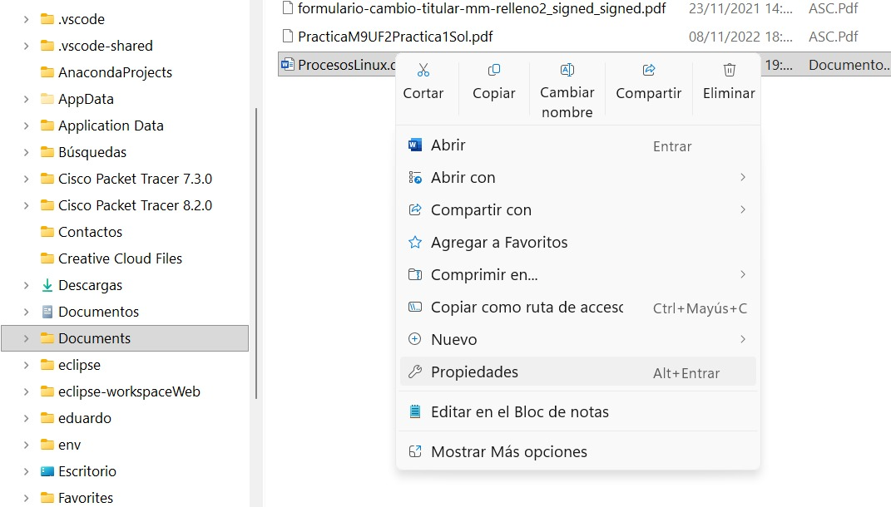
2. Obre la pestanya Seguretat.
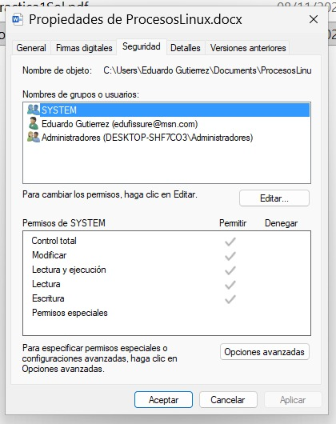
3. Prem Edita i ajusta els permisos de l’usuari o grup.
4. A Opcions avançades revisa el propietari i l’herència.
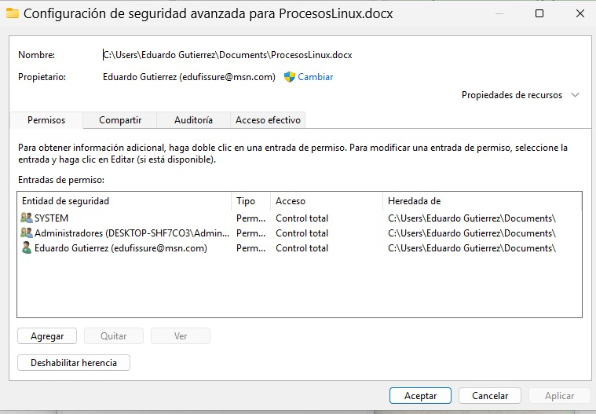
Captures de les diapositives de la Part V.
Els fitxers i subcarpetes poden heretar permisos de la carpeta pare. A Opcions avançades es pot desactivar l’herència, si cal, i revisar el propietari. Cada objecte té propietari i un administrador autoritzat pot prendre’n la propietat amb eines com takeown. Els permisos dels grups es poden combinar; les entrades de permetre i denegar i la seva procedència explícita o heretada influeixen en l’accés efectiu. Si accedeixes per xarxa, també intervenen els permisos de compartició; cal que les dues capes permetin l’operació.
Comparació entre Linux i Windows
Aspecte
Linux
Windows · NTFS
Model
Propietari, grup i altres; es poden afegir ACL POSIX.
ACL amb entrades per a usuaris i grups.
Permisos
r, w i x.
Lectura, escriptura, modificar, control total i altres.
Denegació explícita
Les ACL POSIX no tenen entrades de denegar.
Hi pot haver entrades Permetre i Denegar.
Herència
La umask i les ACL per defecte influeixen en els nous elements.
Les entrades es poden heretar de la carpeta pare.
Eines
chmod, chown, chgrp, umask i setfacl.
Interfície gràfica, icacls, takeown i PowerShell.
En tots dos sistemes aplica el mínim privilegi: concedeix només els permisos necessaris i, quan sigui possible, gestiona’ls mitjançant grups.
Annex I · Crear i gestionar usuaris i grups a Linux
A Ubuntu, obre Configuració → Usuaris, desbloqueja l’eina amb un compte autoritzat i afegeix l’usuari. Tria un compte estàndard o administrador, configura la contrasenya i comprova l’accés. Els noms dels menús poden variar segons la distribució.
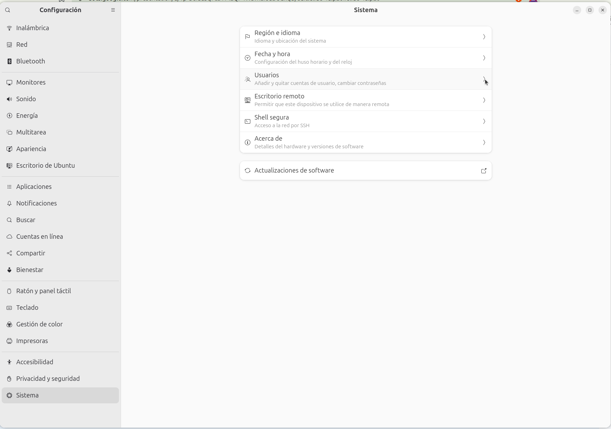
Obre la configuració d’usuaris.
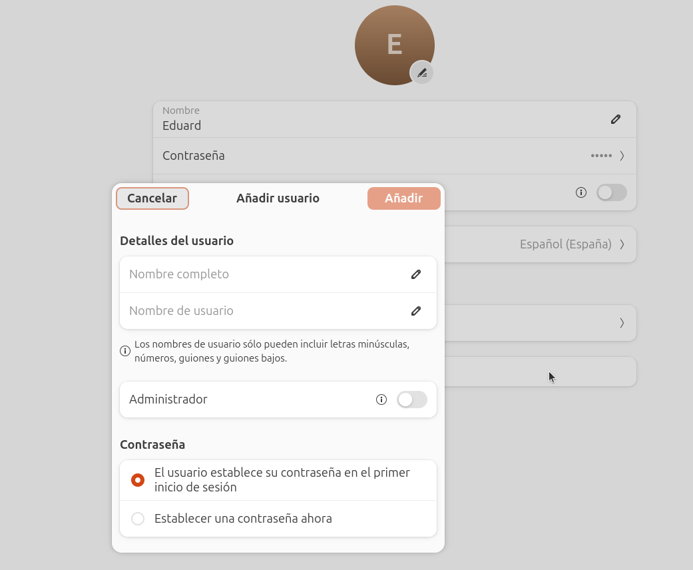
Desbloqueja l’eina per gestionar els comptes.
En una màquina de pràctiques Debian/Ubuntu també pots gestionar comptes i grups des del terminal. Primer crea el compte i comprova les seves dades; després crea el grup, afegeix-hi l’usuari i revisa’n la pertinença:
$ sudo adduser joan
$ id joan
$ getent passwd joan
$ sudo groupadd desenvolupament
$ sudo usermod -aG desenvolupament joan
$ id joan
$ sudo gpasswd -d joan desenvolupament
$ id joan
adduser facilita la creació d’un compte a Ubuntu. Com a alternativa, useradd -m crea el compte amb carpeta personal i després passwd permet assignar-li una contrasenya:
$ sudo useradd -m joan
$ sudo passwd joan
Fes servir aquesta alternativa en lloc de adduser joan, no després de crear el mateix compte. L’opció -a de usermod -aG afegeix el grup sense substituir els grups secundaris existents.
Per eliminar un compte de prova, pots fer servir sudo deluser joan. Si també vols eliminar-ne la carpeta personal, utilitza sudo deluser --remove-home joan. Per eliminar el grup de prova, executa sudo groupdel desenvolupament. A Debian/Ubuntu també pots afegir i treure un usuari d’un grup amb:
$ sudo adduser joan desenvolupament
$ sudo deluser joan desenvolupament
$ id joan
Annex II · Crear i gestionar usuaris i grups a Windows
A Windows Pro, Enterprise i Education, lusrmgr.msc obre la consola d’usuaris i grups locals; aquesta eina no està disponible a l’edició Home. Per obrir-la, prem Windows + R, escriu lusrmgr.msc i prem Retorn.
A Usuaris, utilitza l’opció per crear un usuari i completa el nom i la contrasenya. Revisa les opcions del compte abans de confirmar.
A Grups, consulta els grups existents. Pots crear-ne un de nou des del menú d’accions.
Obre les propietats del grup i afegeix-hi l’usuari. Comprova que apareix com a membre.
Des de la mateixa consola pots retirar membres o eliminar comptes i grups de prova quan ja no siguin necessaris.
La pertinença a un grup facilita assignar permisos compartits. Crea comptes de laboratori i concedeix només els privilegis necessaris.
06 · Llistes de control d’accés i polítiques de seguretat
El control d’accés respon una pregunta: qui pot fer què sobre quin recurs? Després d’identificar i autenticar una persona, el sistema comprova si està autoritzada a llegir, modificar o utilitzar el recurs. Una llista de control d’accés permet expressar aquestes decisions amb regles concretes.
Per què necessitem ACL?
A Linux, els permisos tradicionals distingeixen propietari, grup i altres. Són útils, però una excepció per a un usuari concret pot ser difícil de representar sense ampliar l’accés a més persones.
Per exemple, Anna és propietària d’informe.txt i pot llegir-lo i escriure-hi; el grup profes el pot llegir i els altres no hi tenen accés. Joan no és Anna ni pertany al grup, però necessita llegir aquest fitxer. chmod o+r donaria lectura a tots els altres, no només a Joan. Una ACL permet afegir-hi una entrada concreta per a ell.
Canviar el grup del fitxer per un altre que inclogui Joan també requereix reorganitzar els membres perquè el grup profes conservi la lectura. Fer Joan propietari canviaria qui té el control del fitxer. L’entrada ACL permet concedir-li l’excepció mantenint l’Anna com a propietària.
En un altre cas, el professor és propietari de la carpeta Pràctica i el grup alumnat només la pot consultar. Maria pertany al grup, però necessita modificar la carpeta. Donar escriptura a tot el grup ampliaria els drets de tots els alumnes; una entrada específica permet definir l’excepció per a Maria.
Qui?
Permís desitjat a Pràctica
Professor, propietari
Control de la carpeta.
Grup alumnat
Consultar-la.
Maria, membre d’alumnat
Consultar i modificar.
Resta d’usuaris
Sense accés.
Si es dona escriptura a tot alumnat, tots els membres la reben; si s’assigna un altre grup a la carpeta, cal preservar l’accés dels alumnes. Amb una ACL es pot donar l’excepció a Maria. En una carpeta, consultar els noms i entrar-hi requereix habitualment r i x.
Matriu d’accés, ACL i ACE
Una matriu d’accés organitza els subjectes en files, els recursos en columnes i els drets a les cel·les. Una ACL (Access Control List) organitza les regles per recurs. Una ACE és cadascuna de les entrades de la llista. Una llista de capacitats, en canvi, organitza els drets per subjecte.
ACE
Subjecte
Acció
Permisos a Pràctica
1
Joan
Permetre
Llegir
2
Maria
Permetre
Llegir i escriure
3
Alumnat
Permetre
Llegir
A Windows NTFS les ACE poden permetre o denegar. Les ACL POSIX de Linux amplien propietari, grup i altres amb entrades per a usuaris o grups concrets; no tenen entrades explícites de denegació. Si els permisos efectius no permeten l’acció, l’accés es denega.
ACL mínima i ACL estesa a Linux
Una ACL mínima equival als permisos bàsics. Quan s’afegeixen entrades amb nom apareix una ACL estesa amb una màscara:
La màscara limita els permisos efectius dels usuaris i grups amb nom i del grup propietari; no limita el propietari ni els altres. El signe + a ls -l indica habitualment una ACL addicional. getfacl en mostra les entrades completes:
$ ls -l informe.txt
$ getfacl informe.txt
Exemple · Permisos efectius de Marc
L’entrada de Marc és user:marc:rwx.
La màscara és mask::r-x.
Comparem posició per posició: lectura sí, escriptura no i execució sí.
rwx AND r-x = r-x
Marc té efectivament lectura i execució; la màscara li limita l’escriptura.
La màscara es pot fixar explícitament. Quan s’afegeix o modifica una entrada amb setfacl, normalment es recalcula si l’ordre no especifica una màscara; el càlcul reuneix els permisos de les entrades de la classe de grup. L’opció -n evita aquest recàlcul. Per exemple:
Amb aquesta màscara, l’entrada rw- d’Eduard queda efectivament en r--: la màscara impedeix l’escriptura. Si s’omet -n, cal revisar la màscara recalculada, perquè el resultat depèn de totes les entrades existents. Comprova sempre el resultat amb getfacl.
Modificar ACL a Linux
setfacl -m afegeix o modifica una entrada. u i user són equivalents; g i group també. Dues dues-punts sense nom indiquen l’entrada del propietari o del grup propietari.
-x retira una entrada concreta i -b elimina les entrades ACL addicionals del fitxer, conservant els permisos bàsics. Per definir una ACL per defecte per als elements nous d’un directori:
En fitxers nous, el mode de creació pot limitar els permisos heretats; per això una entrada per defecte rwx no implica que un fitxer nou sigui executable. Els elements nous hereten aquesta base amb els límits del mode de creació; no canvia retroactivament els existents. chmod i les ACL conviuen: amb ACL estesa, canviar els bits de grup també pot modificar la màscara.
Ordres bàsiques a Linux, PowerShell i CMD
Acció
Linux
PowerShell
CMD
Directori actual
pwd
pwd
cd
Llistar
ls
ls
dir
Entrar
cd carpeta
cd carpeta
cd carpeta
Pujar un nivell
cd ..
cd ..
cd ..
Crear carpeta
mkdir prova
mkdir prova
mkdir prova
Eliminar fitxer
rm a.txt
rm a.txt
del a.txt
Netejar pantalla
clear
clear
cls
PowerShell reconeix diverses ordres amb noms familiars, encara que internament funcionin de manera diferent.
ACL a Windows
A Windows, les ACL NTFS es consulten des de Propietats → Seguretat o amb icacls a CMD i PowerShell. PowerShell també disposa de Get-Acl i Set-Acl. Dins de WSL, getfacl i setfacl s’utilitzen sobre el sistema Linux; les ACL NTFS es gestionen amb les eines de Windows.
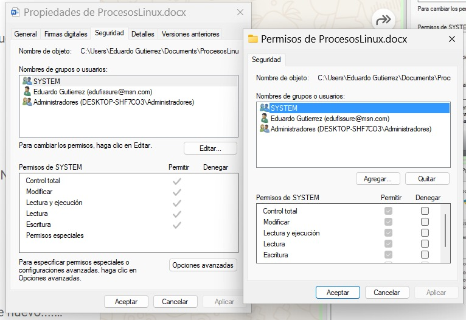
A Windows, consulta les entrades des de Propietats i Seguretat. Imatge de la presentació.
/grant concedeix una entrada; /remove retira entrades del subjecte; /reset restableix l’ACL heretada i pot eliminar entrades explícites. (OI) indica herència als fitxers i (CI) a les subcarpetes. Les cometes permeten escriure l’exemple tant a PowerShell com a CMD. Sense aquests indicadors, l’entrada concedida no es configura per heretar-se als elements fills; amb (OI)(CI), es pot propagar segons les regles d’herència de Windows.
Practica PC\maria:(OI)(CI)(M)
PC\alumnat:(OI)(CI)(RX)
BUILTIN\Administradors:(I)(OI)(CI)(F)
NT AUTHORITY\SYSTEM:(I)(OI)(CI)(F)
En aquesta sortida, (I) indica una entrada heretada; M, modificar; RX, lectura i execució; i F, control total. Administradors i SYSTEM són entrades habituals: no les eliminis sense entendre’n la funció. El resultat efectiu depèn de totes les entrades aplicables, incloses les explícites, heretades i de denegació.
Comparació d’operacions ACL
Acció
Linux
Windows
Consultar ACL
getfacl Practica
icacls Practica
Donar una excepció a Maria
setfacl -m u:maria:rwx Practica
icacls Practica /grant maria:M
Donar lectura a Joan
setfacl -m u:joan:r informe.txt
icacls informe.txt /grant joan:R
Retirar una entrada
setfacl -x u:joan informe.txt
icacls informe.txt /remove joan
Per exemple, per donar al grup alumnat lectura i accés a la carpeta, els exemples equivalents són setfacl -m g:alumnat:rx Practica i icacls Practica /grant alumnat:RX. Per retirar entrades addicionals a Linux s’utilitza setfacl -b informe.txt; a Windows icacls informe.txt /reset restableix l’herència, de manera que el resultat no és idèntic.
Les equivalències són orientatives: els models i els permisos efectius dels dos sistemes no són idèntics.
De la petició a la decisió
1 · Petició Un usuari vol fer una acció sobre un recurs.
2 · Comprovació El sistema revisa les entrades que li corresponen.
3 · Decisió El sistema permet o denega l’acció segons els permisos efectius.
Política d’accés i ACL de xarxa
Una política identifica els recursos, els usuaris o grups, els drets necessaris, les excepcions i qui revisa els permisos. Aplica el mínim privilegi, prefereix grups i rols, revisa altes i baixes i evita donar escriptura a tothom en recursos importants. Les excepcions s’han de justificar i revisar. Convé registrar els canvis i definir qui és responsable de cada recurs. En entorns amb identitat centralitzada es poden combinar els permisos amb serveis com Active Directory, Entra ID o LDAP.
En encaminadors i tallafocs, les ACL també poden filtrar trànsit segons adreces IP, xarxes, ports o protocols. Per exemple, podem permetre HTTPS cap al servidor web i bloquejar altres ports des d’Internet. L’ordre de les regles pot ser decisiu.
Després d’identificar un usuari, autenticar-lo i decidir què pot fer, els registres ajuden a saber què ha passat. No eviten per si sols un incident, però permeten detectar-lo, reconstruir els fets i millorar la resposta.
Concepte
Significat
Exemple
Registre o log
Constància d’un esdeveniment: qui, què, quan, des d’on i amb quin resultat.
Un inici de sessió fallit.
Incidència
Situació que necessita revisió o gestió.
Diversos errors d’accés al mateix compte.
Alarma
Avís quan es compleix una condició definida.
Correu a administració per intents repetits.
Una dada registrada no és necessàriament un atac. Per exemple, cinc intents fallits en dos minuts poden constituir una incidència i generar una alarma, segons la política. Si afecten un compte administrador, se’ls pot assignar una prioritat més alta.
Què registrem i qui ho revisa?
No es tracta de guardar-ho tot sense criteri. Cal prioritzar els sistemes crítics i la informació útil per a la seguretat. La política ha de definir qui revisa els registres i amb quina freqüència, quins fets generen incidències o alarmes, quant temps es conserven i qui els pot consultar, modificar o esborrar i què s’anota a l’inventari d’usuaris i grups. Un registre aporta poc valor si ningú el revisa ni sap com actuar davant dels fets detectats.
Inventari d’usuaris i grups
Cal documentar les altes, baixes o bloquejos, els canvis de grup o rol, els permisos especials i els comptes administradors. Per a cada canvi convé registrar l’usuari afectat, qui l’autoritza, la data i hora, el motiu o tiquet i el sistema afectat.
Exemple · Canvi de funció de la Marta
La Marta passa d’alumna a treballar en pràctiques.
Revisem quins grups i permisos necessita ara i actualitzem el compte.
Anotem l’usuari afectat, qui autoritza el canvi, la data, el motiu i el sistema.
L’inventari ajuda a detectar comptes oblidats i privilegis excessius.
Quins esdeveniments podem trobar?
El sistema pot registrar arrencades i apagades, inici o parada de serveis, errors, canvis de configuració i problemes de rendiment. També pot registrar inicis de sessió correctes o fallits, bloquejos de comptes, ús d’eines administratives, peticions de canvi de fitxers de configuració i canvis de contrasenya o grup.
Per interpretar un registre pregunta’t: què ha passat, quan, amb quin usuari o equip, des d’on i amb quin resultat? Després valora si el fet era esperat o si cal obrir una incidència.
En un exemple de possible força bruta, el registre mostra errors d’accés al compte admin a les 10.00, 10.01 i 10.02; a les 10.03 el compte queda bloquejat i a les 10.05 s’envia una alarma. Cal revisar l’origen, el compte, l’horari i si hi ha més intents semblants.
Exemple · Interpretar l’esdeveniment 1102
Què ha passat? S’ha esborrat el registre d’auditoria.
On i quan? A l’equip AULA-PC04, el 26/10/2026 a les 10.20 h.
Qui hi consta? El compte Administrador.
Què cal comprovar? Si hi havia manteniment autoritzat o si cal investigar una possible eliminació de pistes.
Un 1102 no demostra per si sol que hi hagi un atac.
Registres a Linux
A Ubuntu i altres sistemes Linux hi pot haver fitxers a /var/log; els fitxers disponibles depenen de la configuració i dels serveis instal·lats.
Ruta
Informació habitual
/var/log/auth.log
Autenticacions, intents fallits, sudo i SSH.
/var/log/syslog
Missatges generals del sistema i serveis.
/var/log/kern.log
Missatges del nucli, maquinari i controladors.
/var/log/apt/history.log
Instal·lacions i actualitzacions.
/var/log/apache2/
Accessos i errors d’Apache, si està instal·lat.
El nucli o kernel és la part central del sistema operatiu que gestiona processos, memòria i comunicació amb el maquinari. Per consultar registres pots utilitzar cat per llegir un fitxer, less per veure’l pantalla a pantalla —surt amb q—, tail per veure les últimes línies i grep per cercar text.
journalctl consulta el diari del sistema i permet filtrar per servei, prioritat, usuari o moment temporal; who i w mostren sessions actuals, i last, sessions recents. GNOME també pot disposar de l’aplicació gràfica Registres.
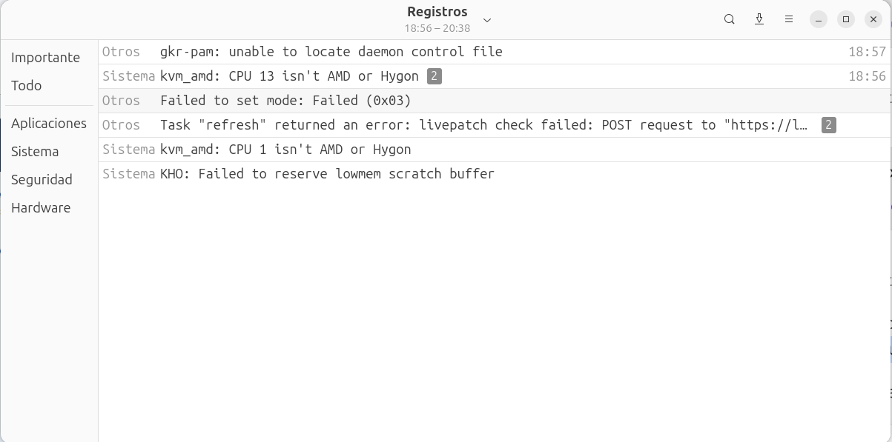
Consulta gràfica de registres a GNOME. Imatge de la presentació.
Registres a Windows
El Visor d’esdeveniments permet consultar els registres d’Aplicació, Seguretat i Sistema i filtrar per data, nivell o identificador. Els nivells inclouen informació, advertiment, error, crític i auditories correctes o fallides. El Gestor de tasques mostra, en canvi, què passa ara, com els processos i el consum de CPU i memòria.
Per obrir aquestes eines, cerca «Visor d’esdeveniments» o «Gestor de tasques» al menú d’inici de Windows. Al Visor pots consultar els registres sense haver d’escriure ordres.
Quan obris el Visor, fixa’t en quatre zones:
Els registres d’Aplicació, Seguretat i Sistema.
La llista d’esdeveniments, amb data, hora, nivell, origen i ID.
Les opcions per cercar o filtrar.
La descripció i els detalls de l’esdeveniment seleccionat.
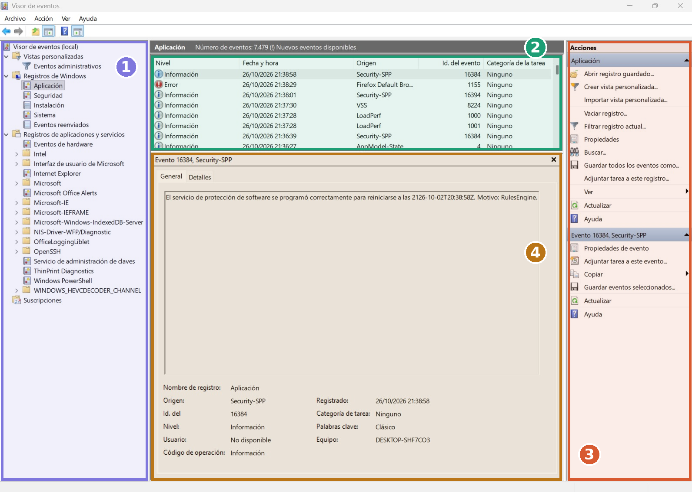
Visor d’esdeveniments: registres, llista d’esdeveniments i detalls. Imatge de la presentació.
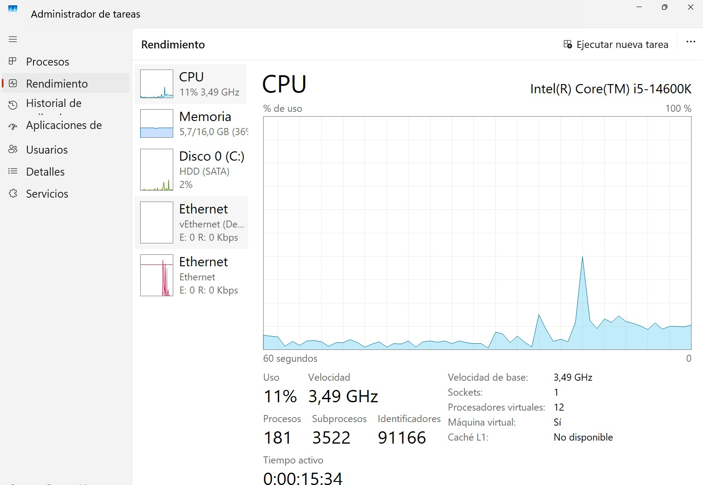
El Gestor de tasques mostra l’activitat actual. Imatge de la presentació.
ID
Registre
Què pot indicar?
4624
Seguretat
Inici de sessió correcte.
4625
Seguretat
Inici de sessió fallit.
4740
Seguretat
Compte bloquejat.
1102
Seguretat
Registre d’auditoria esborrat.
7036
Sistema
Un servei s’ha iniciat o aturat.
Per cercar el 4625, obre el Visor → Registres de Windows → Seguretat, selecciona Filtrar el registre actual, introdueix 4625 i obre un resultat per consultar-ne els detalls.
De l’esdeveniment a l’avís
1 · Registre Es desa què ha passat.
2 · Regla Es compara el fet amb els criteris definits.
3 · Incidència Si cal, s’investiga.
4 · Alarma Es comunica a la persona responsable.
Altres fonts i gestió d’incidències
Els antivirus registren deteccions, quarantenes i actualitzacions; els tallafocs, tràfic permès o bloquejat; els routers i switches, connexions, errors i canvis de configuració; els proxies, peticions i pàgines bloquejades; i les eines d’accés remot, intents d’entrada. Una regla pot convertir una sèrie de registres en una incidència i generar una alarma.
Un tiquet conserva el número d’incidència, la data, l’equip, el problema, la prioritat, la persona responsable, les accions i l’estat. El procés habitual és registrar, assignar, fer seguiment, resoldre i tancar. GLPI, Jira Service Management i ServiceNow són exemples d’eines de gestió.
Exemple · Del registre a l’alarma
El sistema registra els intents d’accés fallits.
Una regla comprova si hi ha cinc intents en dos minuts.
Si es compleix, es pot obrir una incidència per investigar-la.
La política pot bloquejar temporalment el compte i enviar una alarma per correu a administració. Si és un compte administrador, pot tenir prioritat alta.
Model de fitxa de registre d’una incidència
Aquest exemple mostra com documentar una incidència detectada en un equip de l’aula. Cada camp ajuda a assignar-la i a seguir-ne la resolució:
Camp
Exemple
Núm. incidència
INC-001
Data i hora
26/10/2026 · 10:30
Equip
AULA-PC04
Problema detectat
Diversos intents d’accés fallits
Prioritat
Mitjana
Responsable
Tècnic informàtic
Acció realitzada
Revisar el Visor d’esdeveniments
Estat
Pendent de resolució
La fitxa conserva el responsable, l’estat i les actuacions. A mesura que avança la investigació, cal actualitzar-la fins que la incidència es resolgui i es tanqui.
Un sistema de tiquets centralitza les incidències, permet assignar responsables i seguir les actuacions fins al tancament. GLPI és un exemple de codi obert; també existeixen Jira Service Management i ServiceNow. Aquestes eines poden aplicar bones pràctiques de gestió de serveis com ITIL.
Exemple de consulta de tiquets a GLPI. Imatge de la presentació.
Dificultats i protecció dels registres
Els registres poden estar dispersos entre servidors, aplicacions i dispositius. Un pot guardar una IP i un altre només l’usuari o l’equip, cosa que complica relacionar-los. També poden tenir formats diferents, com text, CSV, XML o bases de dades. Si les hores no estan sincronitzades, es fa difícil reconstruir l’ordre dels fets. A més, poden contenir dades personals o activitat privilegiada. Revisar moltes fonts manualment és lent; una eina centralitzada pot facilitar-ne la gestió.
Cal limitar qui els pot veure, modificar o esborrar, protegir-ne la confidencialitat i poder detectar-ne les alteracions, per exemple amb mètodes criptogràfics. Si les dades són sensibles, pot ser adequat xifrar-les o conservar-les en suports protegits. La conservació i els permisos depenen de la política establerta.
Encàrrec: ubicar un rack amb servidor, NAS, switch i SAI per a una empresa de sis persones. Cal poder fer manteniment sense interrompre el pas ni exposar els equips a visites.
Dades del cas fictici
Sala
Característiques
A · Soterrani, 12 m²
Hi passa una canonada i hi ha antecedents de filtracions. Porta amb pany.
B · Interior, 10 m²
22 °C i 45% HR en la lectura inicial. Climatització, porta amb pany, cap conducció d’aigua visible. Cal comprovar potència elèctrica i resistència del terra.
C · Recepció, 16 m²
Vidriera amb sol de tarda, accés de visitants i sense climatització pròpia.
Guió
5 min: llegiu l’encàrrec i repartiu disseny i registre.
10 min: compareu les tres sales amb quatre riscos justificats. Escolliu-ne una i indiqueu què queda pendent de verificar.
15 min: dibuixeu una planta amb rack, accés de manteniment, circulació de l’aire, entrada elèctrica i cablejat. No cal un plànol constructiu.
15 min: proposeu sis mesures amb risc cobert, responsable i forma de comprovació. Incloeu accés, aigua, foc, temperatura i cablejat.
10 min: defenseu la decisió davant d’una altra parella i anoteu una millora.
5 min: lliureu plànol i informe d’una o dues pàgines.
Evidència: comparació de sales, planta llegible i taula de mesures. No cal fotografiar instal·lacions sensibles del centre.
Criteri de correcció
Punts
Ubicació justificada i comprovacions pendents
3
Entorn, aire i espai de manteniment
3
Protecció física i procediment d’accés
3
Claredat de l’informe
1
T2 · S8 · 60 min · Parelles amb verificació individual · Criteris 1.e, 1.f
Comprovació controlada d’un SAI
Objectiu: demostrar que el SAI alimenta una càrrega autoritzada durant una interrupció de prova i que els avisos i el retorn a xarxa funcionen.
Material: SAI i manual concret, bateria carregada, equip de prova amb dades fictícies, rellotge, programari de gestió i fitxa de càrrega. El docent ha comprovat compatibilitat, presa de terra i estat.
Procediment supervisat. No obriu el SAI, no manipuleu bateries ni quadres elèctrics i no interrompeu equips del centre en servei. Preferiu l’autotest o el procediment de tall previst pel fabricant i executat pel docent preservant la protecció de terra. Si no hi ha condicions adequades, feu anàlisi de registres i deixeu pendent la comprovació real del Criteri 1.e.
10 min: identifiqueu model, W/VA, topologia, càrrega i sortides de bateria. Registreu l’estat inicial i el criteri d’aturada acordat.
30 min: amb el docent, executeu la prova prevista al manual. Anoteu inici, avís de bateria i funcionament de la càrrega. Atureu la prova en el límit acordat, davant d’alarma anòmala o segons el manual. Proveu l’apagada ordenada només si la càrrega i l’entorn de laboratori ho permeten.
15 min: compareu el resultat amb l’objectiu. Cada alumne identifica una alarma, interpreta una lectura i justifica una decisió.
5 min: confirmeu retorn a xarxa, absència d’alarmes i càrrega de bateria. Deixeu l’equip en estat segur.
Camp de registre
Què cal escriure
Model i càrrega
Model, límits W/VA, dispositius i consum mesurat o estimat identificat.
Inici i final
Hora i motiu de finalització; distingiu temps de suport observat i autonomia màxima.
Avisos i servei
Alarma detectada, estat del sistema i incidències.
Retorn
Xarxa restablerta, bateria carregant i servei disponible.
Conclusió
Objectiu assolit o pendent i limitacions de la prova.
Sense prou SAIs, feu estacions rotatives: mentre una parella verifica el dispositiu, les altres interpreten un registre. El docent preveu la comprovació individual.
Criteri de correcció
Punts
Preparació, selecció de càrrega i seguretat
3
Comprovació observada i interpretació d’avisos
4
Mesures i conclusió sense sobreestimar autonomia
2
Restitució i registre final
1
T3 · S16 · 60 min · Individual amb suport per parelles · Criteris 1.g, 1.i
MFA i comprovació de permisos
Objectiu: activar un segon factor en un servei real amb compte de prova autoritzat, verificar l’accés i demostrar que el mínim privilegi es compleix a Windows i Linux.
Preparació prèvia: a S15 el docent deixa els comptes de prova operatius i comprova que el servei admet un autenticador o clau compatible. Es reutilitzen les màquines i carpetes d’E4. No es requereix cap compra ni compte personal de l’alumnat.
5 min: comproveu el bloqueig de pantalla, les actualitzacions i el compte de treball. Anoteu l’estat sense inventar configuracions.
20 min: al servei escollit pel docent, entreu a Seguretat → Autenticació en dos passos o equivalent. Vinculeu l’autenticador, confirmeu un codi i custodieu els codis de recuperació en l’espai autoritzat. Tanqueu sessió i feu una autenticació nova per comprovar el segon factor. No filmeu ni compartiu secrets.
25 min: a Linux i Windows, amb el compte de lectura d’E4, obriu el fitxer permès i intenteu crear un fitxer a la carpeta protegida. Ha de poder llegir i no escriure. Amb el compte editor, comproveu que pot crear un fitxer. Si falla, identifiqueu la causa i repetiu la prova després de corregir-la.
10 min: lliureu la matriu prevista i real, evidències sense secrets i una explicació de quins factors s’han utilitzat. Expliqueu en quin cas la biometria podria desbloquejar un autenticador i quina alternativa caldria oferir.
Lliurament: una captura retallada de MFA activat, confirmació de la nova autenticació observada pel docent, quatre resultats de lectura/escriptura com a mínim (dos per sistema), comprovació del compte editor i una nota de privacitat. Els codis de recuperació no es lliuren.
Si el servei falla: feu la demostració docent amb el compte de prova preparat i documenteu el bloqueig. La configuració individual pendent es completa a una comprovació acordada amb el docent. No es presenta la demostració com a activació individual realitzada.
Criteri de correcció
Punts
MFA configurat i autenticació nova comprovada
3
Permisos efectius contrastats als dos sistemes
4
Interpretació dels factors d’autenticació
1
Justificació del mínim privilegi i qualitat de les evidències
2
E1 · S1–S2 · 20 min per sessió
Conceptes i classificació
S1: per a cada cas identifiqueu actiu, amenaça, vulnerabilitat i propietat CID afectada: (a) portàtil amb dades sense xifrar robat d’un cotxe, (b) pressupost modificat per un compte compartit, (c) servidor apagat per un tall, (d) carpeta de nòmines compartida amb tothom. Proposeu una mesura i un risc residual.
S2: classifiqueu com a física o lògica: rack tancat, ACL, sensor de fuita, MFA, SAI, bloqueig de pantalla, permisos NTFS i ventilació. Expliqueu per què física/lògica no és el mateix que activa/passiva.
E2 · S7 · 35 min de treball + 15 min de correcció
Dimensionament i elecció del SAI
Cas fictici de consolidació, diferent de l’exemple resolt: els consums i les autonomies següents són dades donades per calcular, no característiques dels equips comercials citats als apunts.
La càrrega és servidor 250 W + NAS 60 W + switch 30 W + router 15 W. FP agregat = 0,90, hipòtesi del problema. Cal deixar lliure el 30% de la capacitat nominal i mantenir el servei durant almenys 7 minuts.
Model fictici
Capacitat
Autonomia a 355 W, dada facilitada
A
650 VA / 360 W
4 min
B
1.000 VA / 600 W
9 min
C
1.500 VA / 900 W
16 min
Calculeu W i VA totals i els dos mínims de selecció.
Determineu quin és el model mínim suficient. Justifiqueu el rebuig o l’acceptació de cada model.
El responsable vol afegir una impressora làser. Quines dades falten i per què no la connectaríeu automàticament?
Una etiqueta diu 230 V i 0,5 A. Quina potència aparent indica? Podeu afirmar els W sense conèixer FP?
Expliqueu què canviaria si el NAS quedés connectat fora del SAI.
E3 · S9 · 35 min de treball + 15 min de correcció
Auditoria ràpida de seguretat física
Situació: rack obert al costat d’una finestra, una entrada d’aire tapada amb caixes, SAI amb avís de bateria, switch fora del SAI, cable travessant la porta i registre de visites buit.
Identifiqueu sis riscos i la propietat CID afectada.
Prioritzeu-los amb probabilitat i impacte d’1 a 3, justificats.
Proposeu una actuació immediata i una de planificada per als tres primers.
Indiqueu quines tasques pot fer l’alumnat amb autorització i quines requereixen manteniment especialitzat.
Prepareu una prova per confirmar cadascuna de les tres correccions.
E4 · S12–S13 · Laboratori preparat pel docent
Permisos Linux, NTFS i política de contrasenyes
S12 · Linux, 25 minuts
Utilitzeu exclusivament una VM de laboratori amb instantània. Si els noms següents ja existeixen, el docent assigna un prefix nou. Els usuaris no necessiten contrasenya per a les proves amb sudo -u. El paquet d’eines ACL ha d’estar preparat.
El 2 de 2770 activa setgid al directori perquè els nous elements heretin el grup. Aquest guió dona l’ACL al fitxer existent i no estableix una ACL per defecte. Registreu els resultats esperats i observats de les tres últimes ordres.
S12 · Windows, 20 minuts
En una VM amb comptes locals de prova ja preparats, creeu C:\RA1\Projecte en un volum NTFS.
Propietats → Seguretat → Opcions avançades: reviseu les entrades heretades. Manteniu SYSTEM i Administradors. Si hi ha accés ampli heretat, convertiu l’herència a entrades explícites en aquesta carpeta de prova i retireu només les entrades àmplies identificades.
Assigneu «Modificar» al compte editor i «Lectura i execució» al lector. Creeu un fitxer de dades fictícies.
Amb cada compte, proveu lectura i creació d’un fitxer. Compareu amb Accés efectiu. No modifiqueu permisos de carpetes del sistema.
Últims 10 min: lliureu matriu de permisos i proves, amb noms ficticis. La preparació inicial ocupa els primers 5 min de la sessió.
S13 · GPO guiada, 30 minuts + 10 de comprovació
Després de 20 minuts de teoria, el docent mostra un domini de laboratori preparat. S’anota la política inicial i es treballa només sobre comptes de prova.
Obriu la consola d’administració de directives de grup. Identifiqueu la política efectiva de comptes de domini abans d’editar.
Localitzeu Configuració de l’ordinador → Directives → Configuració de Windows → Configuració de seguretat → Directives de compte.
Proposeu longitud, historial, caducitat i limitació d’intents. El docent aplica els valors compatibles amb la versió i l’abast de domini.
Comproveu la política amb Get-ADDefaultDomainPasswordPolicy si el mòdul ActiveDirectory està disponible. Per a comptes amb política granular, consulteu també la resultant.
Amb un compte de prova sense política granular, proveu una contrasenya massa curta i una de vàlida, sense revelar-les a l’informe. Registreu resultat i hora. Restaureu la configuració acordada.
Alternativa si no hi ha domini: demostració docent gravada o política local en una edició compatible. Cal indicar que una política local no demostra configuració d’una GPO de domini. No es força un bloqueig que deixi el laboratori sense accés.
E5 · S14 · 20 min + 10 min de debat
Errors biomètrics i proporcionalitat
Un sistema accepta 2 de 2.000 intents d’impostors i rebutja 15 de 500 intents legítims. Calculeu FAR i FRR. Expliqueu què pot passar si es fa més estricte el llindar.
Una empresa vol empremtes per entrar a una oficina on ja funciona una targeta. Indiqueu dos avantatges possibles de la biometria, dos inconvenients i tres preguntes que cal resoldre abans d’implantar-la. Proposeu una alternativa per a qui no pugui utilitzar el sensor.
E6 · Registres · Contingut 1.9
Comptes, registres i informe d’incidència
Després d’una demostració docent de 10 minuts, treballeu en VMs amb dades fictícies. Cal distingir inventari de comptes i registre d’activitat.
10 min: inventarieu els dos comptes d’E4: rol, estat, responsable de prova, data de revisió i accés justificat. Identifiqueu un accés que s’hauria de retirar en una baixa.
10 min: comproveu bloqueig automàtic, compte sense privilegis innecessaris i estat d’actualitzacions. Feu una millora reversible autoritzada, com configurar el bloqueig de pantalla de la VM, i comproveu-la.
15 min: examineu un registre local amb el docent. A Windows, filtreu Seguretat per un esdeveniment 4625 si l’auditoria el genera. A Linux, consulteu journalctl --since "15 minutes ago" amb permisos adequats i localitzeu una acció coneguda. No feu atacs ni repetiu contrasenyes fins a bloquejar comptes.
15 min: redacteu l’informe a partir del conjunt fictici següent i lliureu evidències anonimitzades de la comprovació del dispositiu.
Determineu què és un fet i què és una hipòtesi, quin accés s’ha denegat correctament i què cal investigar. Proposeu prioritat, responsable, actuació i comprovació de tancament. El fitxer fictici és una representació didàctica, no el format literal d’un registre del sistema.
Lliurament: inventari de dos comptes, evidència inicial/final d’una mesura de protecció i fitxa d’incidència sense dades personals ni secrets.
Activitats de les presentacions · Part V
Pràctiques de permisos i umask
Aquestes activitats provenen de la presentació de permisos. Les solucions serveixen per comprovar la feina i estudiar. Consulta també la lliçó de permisos.
1. Crear fitxers amb diferents umask
Estableix umask 022, crea capitol5 i, dins, el fitxer fic1 i el directori dir1. Canvia a umask 027 i crea fic2 i dir2 al mateix nivell. Compara els permisos i comprova si els primers han canviat.
Solució per estudiar
$ umask 022
$ mkdir capitol5
$ cd capitol5
$ ls -l
$ ls -ld .
$ umask
$ touch fic1
$ mkdir dir1
$ ls -l
$ umask 027
$ touch fic2
$ mkdir dir2
$ ls -l
$ ls -ld dir1 dir2
Sense ACL per defecte, fic1 és 644 i dir1 755; fic2 és 640 i dir2 750. Canviar la umask no modifica els elements ja creats. ls -ld . mostra els permisos de la carpeta actual; ls -ld dir1 mostra els de dir1, mentre que ls -l dir1 mostra el contingut.
2. Permisos d’un directori i fitxer ocult
Afegeix rwx a altres usuaris sobre dir1 amb notació simbòlica i prova una assignació octal a dir2. Crea una carpeta de prova i un fitxer ocult .secret; deixa-li només lectura per al propietari. Amb un altre compte de prova, comprova si el pot llegir o eliminar i justifica el resultat.
El valor 007 és una de les solucions de l’exemple: deixa propietari i grup sense permisos i dona rwx als altres. El 400 impedeix als altres llegir el fitxer, però eliminar-lo depèn dels permisos d’escriptura i execució del directori que el conté, així com de possibles restriccions addicionals. Si la carpeta /tmp/usuari-prova s’ha creat amb umask 027 i no té ACL per defecte, habitualment queda amb 750: un segon usuari que no pertanyi al grup no pot travessar-la, llegir el fitxer ni eliminar-lo. Amb una carpeta que sí que li permeti travessar-la, el permís 400 continua impedint-li llegir el fitxer; si a més té w i x a la carpeta, podria eliminar-lo, subjecte a restriccions com el bit sticky. Comprova els permisos reals amb comptes de laboratori.
3. Directoris i fitxers
Amb umask 002, crea docpersonal amb permisos 700 i les subcarpetes fica, ficb, ficc i ficd. Assigna’ls, respectivament, 755, 700, 750 i 777. A fica crea prova.txt i compara els permisos 600 i 644.
Solució per estudiar
$ cd ~/capitol5
$ pwd
$ umask 002
$ mkdir docpersonal
$ chmod 700 docpersonal
$ cd docpersonal
$ mkdir fica ficb ficc ficd
$ chmod 755 fica
$ chmod 700 ficb
$ chmod 750 ficc
$ chmod 777 ficd
$ ls -ld fica ficb ficc ficd
$ touch fica/prova.txt
$ ls -l fica/prova.txt
$ chmod 600 fica/prova.txt
$ ls -l fica/prova.txt
$ chmod 644 fica/prova.txt
$ ls -l fica/prova.txt
Amb umask 002 i sense ACL per defecte, el fitxer acabat de crear és habitualment 664. Després, 600 dona lectura i escriptura només al propietari; 644 afegeix lectura al grup i als altres. El directori pare docpersonal té 700, de manera que els altres no el poden travessar encara que una subcarpeta o fitxer mostri permisos més amplis.
Part III · SAI
Exercicis resolts de SAI
Relacionats amb la lliçó de SAI. Els resultats d’autonomia són estimacions teòriques; la durada real es comprova amb la fitxa del fabricant.
Energia i autonomia
Una bateria de 12 V i 9 Ah alimenta una càrrega de 500 W. Suposem un factor d’energia útil del 90 % i que el SAI admet la càrrega en W i VA. Calcula l’energia teòrica, l’energia útil i els minuts.
Solució per estudiar
Pas 1 · Energia teòrica
1 × 12 V × 9 Ah = 108 Wh
Pas 2 · Energia útil estimada
108 Wh × 0,90 = 97,2 Wh
Pas 3 · Autonomia teòrica
(97,2 Wh ÷ 500 W) × 60 ≈ 11,7 minuts
És una estimació, no una durada garantida.
Un lloc de treball
Un ordinador consumeix 220 W, el monitor 30 W i el router 10 W. Amb marge del 25 % i FP 0,7, tria entre A: 500 VA / 300 W i B: 650 VA / 360 W.
Solució per estudiar
Pas 1 · Consum real
220 + 30 + 10 = 260 W
Pas 2 · Aplicar el marge del 25 %
260 × 1,25 = 325 W
Pas 3 · Calcular els VA
325 ÷ 0,7 ≈ 464,3 VA
Pas 4 · Comparar els models
El model A no compleix perquè 300 W és inferior a 325 W. El model B compleix els dos límits de potència; cal verificar-ne també l’autonomia.
Per estimar l’autonomia s’utilitzen els 260 W reals, no els 325 W amb marge.
Comparar models
Busca tres SAI per a 350 W reals, amb marge del 25 %, FP suposat 0,7, autonomia mínima de 10 minuts i tres preses compatibles amb bateria. Anota marca, model, tecnologia, W, VA, minuts a 350 W, preses, preu, data i font del fabricant. Justifica quins compleixen i què queda pendent de confirmar.
Dada per comparar
Model A
Model B
Model C
Marca, model i tipus
—
—
—
Potència: VA i W
—
—
—
Minuts a 350 W i font
—
—
—
Preses amb bateria i USB
—
—
—
Preu, data i enllaç
—
—
—
Compleix? Què falta confirmar?
—
—
—
Completa la comparació amb els enllaços o captures de les fonts i una justificació de tres frases.
Criteri de correcció
El mínim de potència és 350 × 1,25 = 437,5 W i 437,5 ÷ 0,7 = 625 VA. A més, cal comprovar almenys 10 minuts a la càrrega real i les tres preses amb bateria: complir només W i VA no acredita l’autonomia.
La carpeta Projecte és del grup desenvolupament. Laia ha d’entrar i veure’n el contingut, sense crear, modificar ni eliminar, i sense afegir-la al grup.
Si també s’ha d’heretar als fitxers i subcarpetes: icacls C:\Projecte /grant "laia:(OI)(CI)RX". Revisa també les ACL dels fitxers i de les subcarpetes: la lectura i el pas a la carpeta, per si sols, no anul·len altres permisos d’escriptura que Laia ja pugui tenir sobre elements existents. Comprova els permisos efectius i que cap altra entrada li concedeixi drets més amplis.
Una excepció per a Maria
El grup alumnat només llegeix treball.txt, però Maria necessita modificar-ne el contingut. Com ho faries sense donar aquest dret a tot el grup?
Cal comprovar que la màscara permet l’escriptura. A Windows, si Maria ja rep lectura del grup, una entrada específica pot afegir escriptura sense concedir-li modificar complet:
Comprova l’accés efectiu i les entrades existents amb un compte de prova.
Matriu d’accés d’un institut
Els recursos són Notes, Material d’aula, Secretaria i Web. El professorat edita notes i material; l’alumnat consulta material i web; secretaria edita documents administratius; direcció consulta notes i material i edita secretaria i web. Un alumne delegat necessita editar una carpeta concreta del material d’aula. Identifica subjectes i recursos, completa la matriu, escriu dues normes de política i indica l’excepció que podria requerir una ACL.
Solució orientativa
Subjecte
Notes
Material
Secretaria
Web
Professorat
L/E
L/E
—
L
Alumnat
—
L
—
L
Secretaria
—
—
L/E
L
Direcció
L
L
L/E
L/E
L és lectura, L/E lectura i escriptura i — cap accés. Dues normes possibles són assignar permisos segons la funció de cada grup i revisar periòdicament els accessos. Una ACL pot donar a un delegat permís d’edició en una carpeta concreta sense ampliar l’accés a tot l’alumnat.
Política d’una empresa
Una empresa té els grups direcció, comptabilitat, comercial, informàtica i personal general, i les carpetes Nòmines, Factures, CRM, Còpies de seguretat i Documents comuns. Cada grup necessita els accessos següents:
Direcció: consulta nòmines, factures i CRM; crea i modifica documents comuns.
Comptabilitat: prepara i actualitza nòmines i factures; treballa amb documents comuns.
Comercial: gestiona el CRM i treballa amb documents comuns; no necessita consultar nòmines ni factures.
Informàtica: gestiona les còpies de seguretat i consulta documents comuns; no necessita accedir habitualment a les altres carpetes.
Personal general: consulta, crea i modifica documents comuns.
Un treballador de comercial necessita consultar temporalment una factura concreta per resoldre una incidència. Identifica subjectes i recursos, assigna els permisos, escriu una política en tres frases i indica on cal una excepció ACL.
Solució orientativa
Grup
Nòmines
Factures
CRM
Còpies
Comuns
Direcció
L
L
L
—
L/E
Comptabilitat
L/E
L/E
—
—
L/E
Comercial
—
—
L/E
—
L/E
Informàtica
—
—
—
L/E
L
Personal general
—
—
—
—
L/E
La política aplica mínim privilegi, permisos per grups i revisió periòdica. L’excepció de lectura s’atorga al recurs concret, es documenta i es retira o revisa en acabar la necessitat.
09:12 sshd: Accepted password for pau
10:01 sshd: Failed password for admin from 185.x.x.x
10:02 sshd: Failed password for admin from 185.x.x.x
10:03 sshd: Failed password for admin from 185.x.x.x
10:04 sshd: Failed password for admin from 185.x.x.x
10:06 sudo: anna : COMMAND=/usr/sbin/useradd test
Classifica els fets, indica quines ordres utilitzaries, quines dades falten i quina resposta proposaries.
Solució orientativa
La connexió de Pau pot ser normal. Els quatre intents fallits sobre admin són una incidència que pot generar una alarma segons la política; la creació d’un usuari amb sudo s’ha de comprovar. Cal revisar l’origen, l’equip, l’hora, el compte afectat i si la creació estava autoritzada. Per investigar millor falten, entre altres dades, la IP completa, una possible geolocalització aproximada, el propietari del compte i si l’acció amb sudo tenia un tiquet autoritzat. Si el procediment ho preveu, es pot bloquejar temporalment l’accés i avisar l’administració.
Les rutes poden variar segons la configuració del sistema.
2. Esdeveniments de Windows
09:45 ID 4624 Inici correcte: carla
10:12 ID 4625 Inici fallit: admin
10:13 ID 4625 Inici fallit: admin
10:14 ID 4625 Inici fallit: admin
10:15 ID 4740 Compte admin bloquejat
10:20 ID 1102 Registre d’auditoria esborrat
Identifica els fets normals, les incidències i la possible alarma crítica. On els consultaries?
Solució orientativa
El 4624 de Carla pot ser normal. Els 4625 repetits justifiquen investigar; el 4740 mostra el bloqueig del compte. El 1102 indica que s’ha esborrat el registre d’auditoria i pot ser una alarma crítica si no hi havia manteniment autoritzat. Al Visor d’esdeveniments, ves a Registres de Windows → Seguretat, filtra els ID i compara usuari, equip, hora i origen.
M0226 · Seguretat informàtica
RA1 · Criteris i continguts
La qualificació segueix la programació del mòdul: Pt 20%, Pe 70% i Gr 10%, amb les condicions de lliurament i notes mínimes establertes.
Criteris d’avaluació del mòdul
Criteri
Descripció
Evidència
1.a
Valora la importància de mantenir la informació segura.
E1 i Pe1
1.b
Descriu les diferències entre seguretat física i lògica.
E1 i Pe1
1.c
Defineix les característiques de la ubicació física i condicions ambientals dels equips i servidors.
T1
1.d
Identifica la necessitat de protegir físicament els sistemes informàtics.
T1 i E3
1.e
Verifica el funcionament dels sistemes d'alimentació ininterrompuda.
T2: verificació observada
1.f
Selecciona els punts d'aplicació dels sistemes d'alimentació ininterrompuda.
T2 i E2
1.g
Esquematitza les característiques d'una política de seguretat basada en llistes de control d'accés.
T3 i E4
1.h
Valora la importància d'establir una política de contrasenyes.
E4: política de contrasenyes
1.i
Valora els avantatges que suposa la utilització de sistemes biomètrics.
E5 i reflexió T3
Continguts
Contingut
Descripció
1.1
Ubicació física i condicions ambientals dels equips i servidors.
1.2
Protecció física dels sistemes informàtics.
1.3
Els sistemes d'alimentació ininterrompuda.
1.4
Aplicació dels sistemes d'alimentació ininterrompuda.
1.5
Polítiques de seguretat basades en llistes de control d'accés.
1.6
Polítiques de contrasenyes; sistemes biomètrics.
1.7
Mecanismes de seguretat d'accés al sistema.
1.8
Permisos i drets d'usuaris.
1.9
Gestió de l'inventari dels registres d'usuaris, incidències i alarmes.
Criteris del centre · Activitat independent
Criteri
Descripció
*1.j
Aplica els procediments de la competència digital 4.1 Protegir els dispositius.
*1.k
Aplica els procediments de la competència digital 4.2 Protegir les dades personals i la privacitat.
Consulta les activitats de competència digital: feina autònoma, lliurament separat i validació pròpia. No formen part de la prova del RA ni dels seus pesos.
![Exemple d’una llista de tiquets a GLPI]()